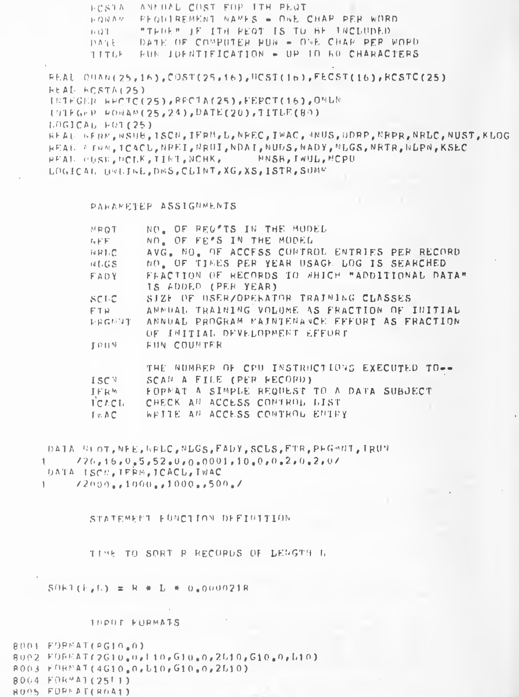
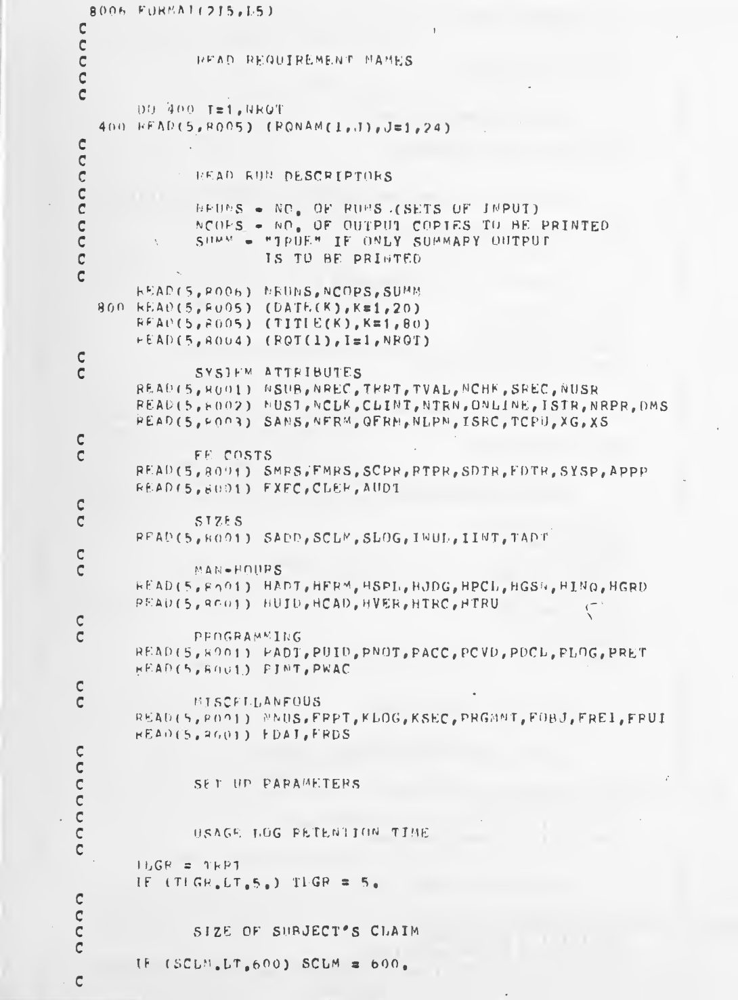
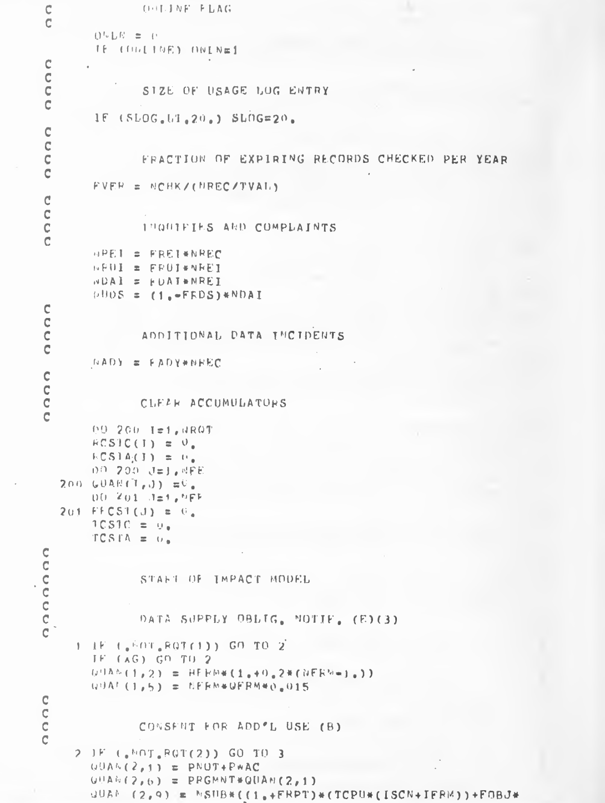
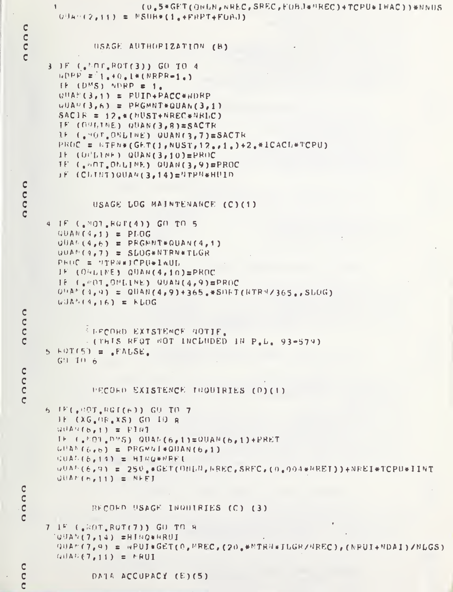
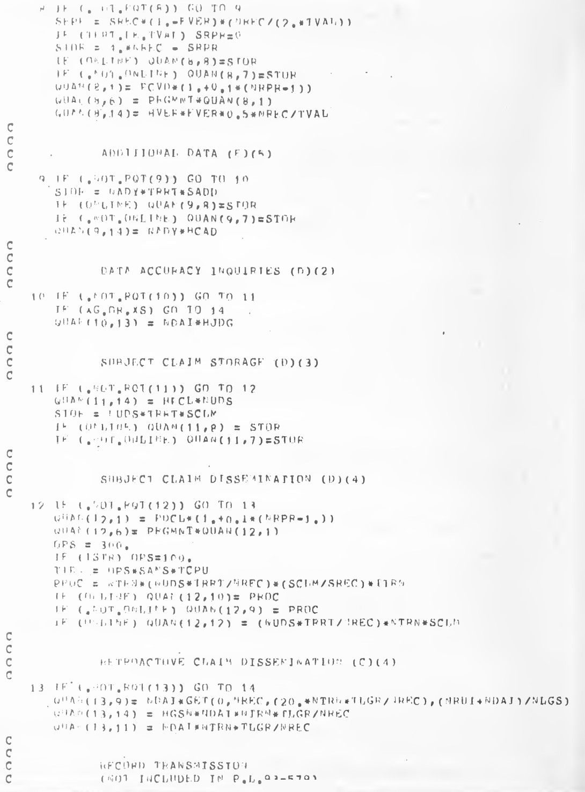
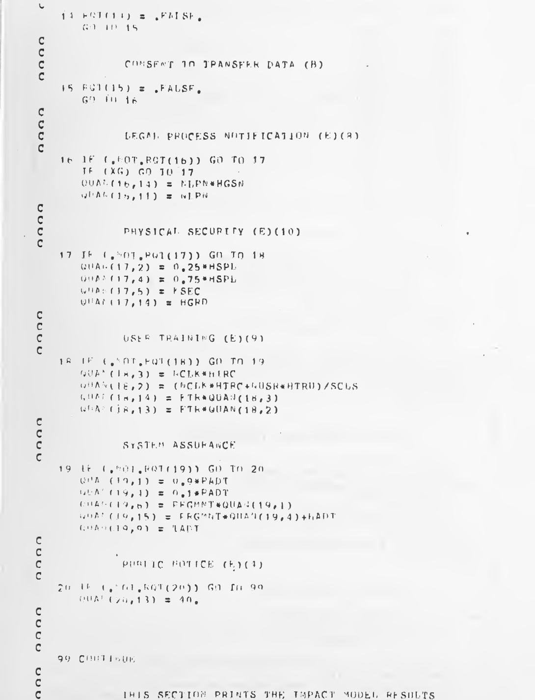
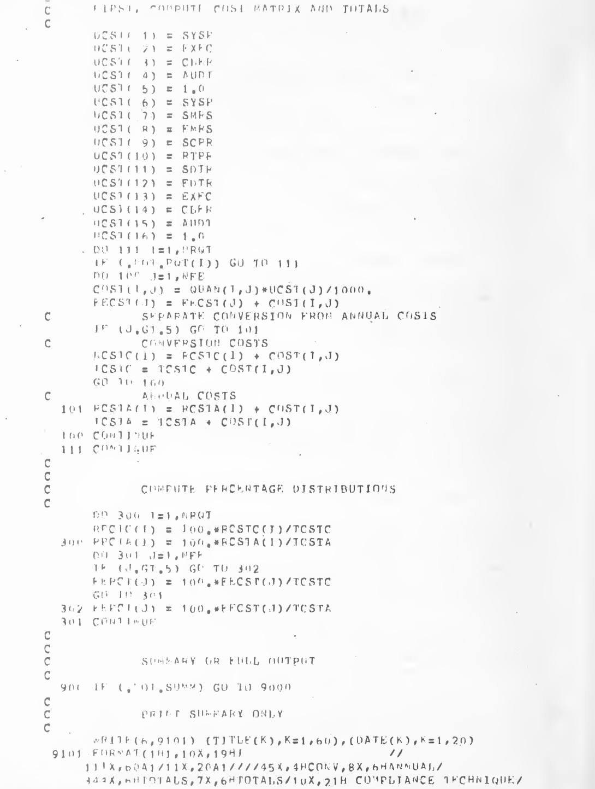
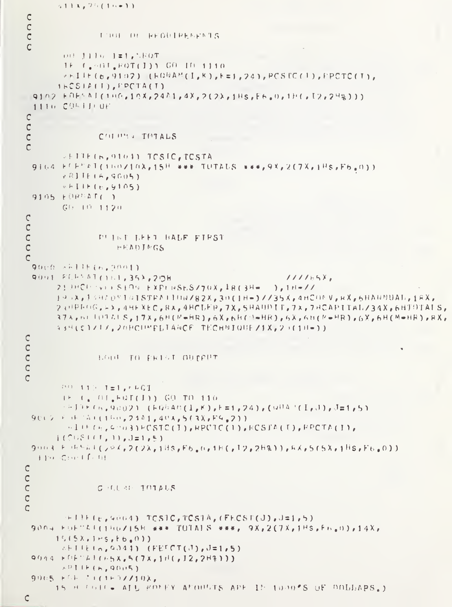
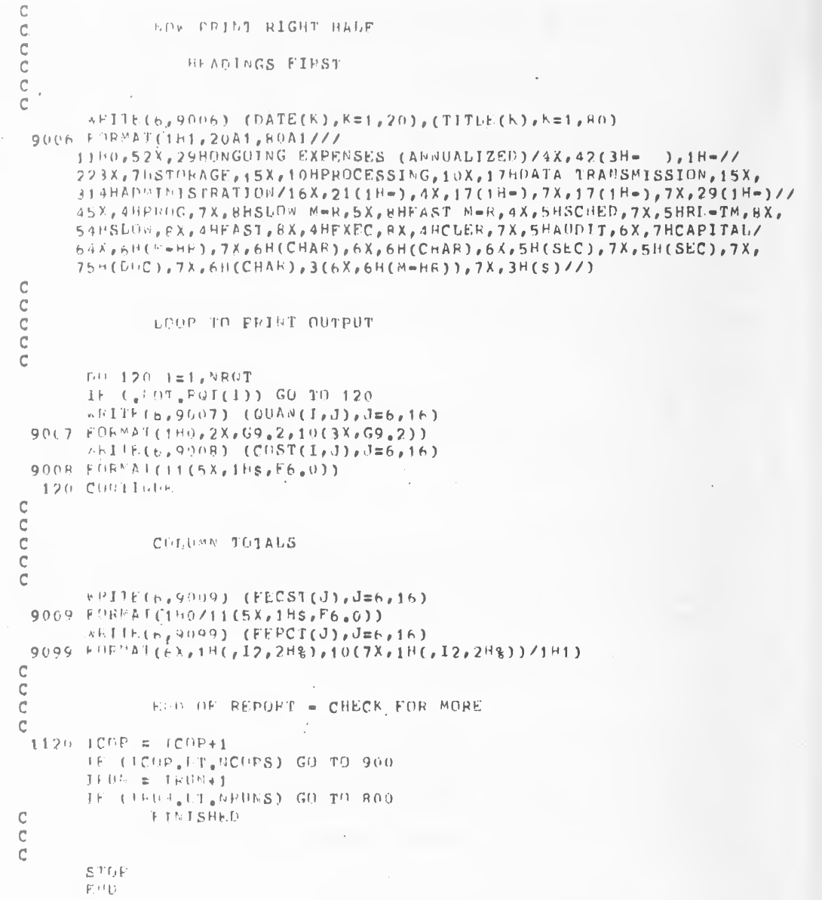

NIST IR 985 日本語訳
英語タイトル : A Computer Model to Determine Low Cost Techniques to Comply with the Privacy Act of 1974日本語タイトル : 1974 年プライバシー法に準拠する低コストの技法を決定するためのコンピュータモデル
公開日 : 1976-02-01
原文URL : https://csrc.nist.gov/pubs/ir/985/final
翻訳編集 : 自動生成（有志による非公式の日本語訳）, 原文取得日 : 2026-10-31, 訳文 : 509 / 509 ブロック
[要約] NIST IR 985 は、1974 年プライバシー法に準拠する低コストの技法を決定するためのコンピュータモデルを説明する報告書で、D. P. Management Corporation の Robert C. Goldstein 博士と Henry H. Seward 博士が、計算機科学技術研究所（ICST）のシステム・ソフトウェア部門のために作成しました。このモデルは、同法の要件がコストに与える影響をコンピュータでシミュレーションし、義務付けられた保護措置を実施する代替の方法によって生じる違いを判断する、具体的で客観的な手法とされています。文書は DPM Cost of Privacy Model を実行するために必要な手順とプログラムの説明を含み、システム要件、モデルへの入力方法、出力とその解釈の 3 つの節で構成されています。付録として、コンピュータプログラムのリストや、データ収集のための定型面接の形式も収められています。
NBSIR 76-985
NBSIR 76-985
A Computer Model to Determine Low Cost Techniques to Comply with the Privacy Act of 1974
1974 年プライバシー法に準拠する低コストの技法を決定するためのコンピュータモデル
Dr. Robert C. Goldstein
Dr. Henry H. Seward
Robert C. Goldstein 博士
Henry H. Seward 博士
D. P. Management Corporation
1 Militia Drive
Lexington, Massachusetts 02173
D. P. Management Corporation
1 Militia Drive
Lexington, Massachusetts 02173
February 1976
1976年2月
Final
最終版
Prepared for the
Systems and Software Division
Institute for Computer Sciences and Technology
National Bureau of Standards
以下の組織のために作成
システム・ソフトウェア部門
計算機科学技術研究所（ICST）
米国標準局（NBS）
NBSIR 76-985
NBSIR 76-985
A COMPUTER MODEL TO DETERMINE LOW COST TECHNIQUES TO COMPLY WITH THE PRIVACY ACT OF 1974
1974 年プライバシー法に準拠する低コストの技法を決定するためのコンピュータモデル
Dr. Robert C. Goldstein
Dr. Henry H. Seward
Robert C. Goldstein 博士
Henry H. Seward 博士
D. P. Management Corporation
1 Militia Drive
Lexington, Massachusetts 02173
D. P. Management Corporation
1 Militia Drive
Lexington, Massachusetts 02173
February 1976
1976年2月
Final
最終版
Prepared for the
Systems and Software Division
Institute for Computer Sciences and Technology
National Bureau of Standards
以下の組織のために作成
システム・ソフトウェア部門
計算機科学技術研究所（ICST）
米国標準局（NBS）
U.S. DEPARTMENT OF COMMERCE, Rogers C.B. Morton, Secretary
James A. Baker, III, Under Secretary
Dr. Betsy Ancker-Johnson, Assistant Secretary for Science and Technology
米国商務省 Rogers C.B. Morton 長官
James A. Baker, III 次官
Betsy Ancker-Johnson 博士、科学技術担当次官補
NATIONAL BUREAU OF STANDARDS, Ernest Ambler, Acting Director
米国標準局（NBS） Ernest Ambler 長官代行
Preface
序文
The work presented on these pages represents, to our knowledge, a uniquely concrete and objective approach to evaluating some of the economic considerations resulting from the Privacy Act of 1974 (PL 93-579). By using a computer model to simulate the cost impact of the Act's requirements, one can determine the differences resulting from alternative approaches to implementing the mandated safeguards.
ここに示す研究は、私たちの知る限り、1974 年プライバシー法（PL 93-579）によって生じる経済的な考慮事項の一部を評価するための、他に例を見ない具体的かつ客観的な手法です。コンピュータモデルを用いて同法の要件がコストに与える影響をシミュレーションすることで、義務付けられた保護措置を実施する代替の方法によって生じる違いを判断できます。
The computer model and the methodology it represents can be altered and modified to reflect changing circumstances and different record keeping systems. The publication of this work reflects our desire to improve the model by soliciting comments and suggestions from those involved in dealing with the task of complying with the law. By acting as a central collection point for these comments, NBS can provide a pool of knowledge that will aid all agencies.
このコンピュータモデルとそれが表す方法論は、状況の変化や記録保管システムの違いを反映するように変更・修正できます。本研究を公表するのは、同法への準拠という課題に取り組む方々から意見や提案を募り、モデルを改良したいと考えるためです。NBS はこれらの意見の集約窓口となることで、すべての機関の役に立つ知見の蓄積を提供できます。
Table of Contents
目次
1.0 INTRODUCTION
1.0 序論
This document contains a complete description of the steps necessary to run the DPM Cost of Privacy Model along with a description of the computer program. The computer model has been developed for the National Bureau of Standards by the D. P. Management Corporation of Lexington, Massachusetts, and is made available for federal agency use. In a companion NBS document, entitled Methodology for Evaluating Alternative Technical and Information Management Approaches to Privacy Requirements, the algorithms contained in this model are explained. The interested reader is advised to review this document.
本書は、DPM Cost of Privacy Model を実行するために必要な手順の完全な説明と、コンピュータプログラムの説明を含んでいます。このコンピュータモデルは、米国標準局（NBS）のために、マサチューセッツ州レキシントンの D. P. Management Corporation が開発したもので、連邦機関が利用できるようになっています。このモデルに含まれるアルゴリズムは、NBS の関連文書 Methodology for Evaluating Alternative Technical and Information Management Approaches to Privacy Requirements で説明されています。関心のある読者は、その文書を参照することをお勧めします。
The document is divided into three sections. The first describes general system requirements for running the program. The second describes how to input information to the model. And the third describes the output and how to interpret it.
本書は 3 つの節に分かれています。最初の節では、プログラムを実行するための一般的なシステム要件を説明します。2 番目の節では、モデルに情報を入力する方法を説明します。3 番目の節では、出力とその解釈の方法を説明します。
In reading the output, the user should be aware that computer output run on "batch" processing with output on high speed printers is usually limited to 132 characters of printing across a page. This is the form of output familiar to most people. For many terminals, on the other hand, the number of characters is usually limited to 72 characters per line. Such output looks very similar to a typed page of information. The output of this model may be adapted quite easily to either form of processing.
出力を読む際には、「バッチ」処理で高速プリンタに出力されるコンピュータ出力が、通常、1 行あたり最大 132 文字に制限されることに注意してください。これは、ほとんどの人になじみのある出力形式です。一方、多くの端末では、1 行の文字数は通常 72 文字に制限されます。このような出力は、タイプされた情報のページによく似ています。このモデルの出力は、どちらの処理形態にも容易に合わせることができます。
An important aspect of any model is its ability to be used for comparing numerous results based on various assumptions. Although the Cost of Privacy Model is not unique in this aspect, it is extremely important for the user to be aware of this capability, because of the very obvious subjective aspects of some of the input. As the user becomes familiar with the input and output from the model, specific attention should be placed on how to manipulate the data and thus how to achieve reliable results.
どのモデルにおいても重要な点は、さまざまな仮定に基づく多数の結果を比較するために使用できることです。Cost of Privacy Model はこの点で特有のものではありませんが、入力の一部に明らかに主観的な側面があるため、利用者がこの機能を認識しておくことが極めて重要です。利用者はモデルの入力と出力に習熟するにつれて、データをどのように操作し、それによって信頼できる結果をどのように得るかに特に注意を払うべきです。
The model is not overly complex and the input and output are fairly simple to understand. Because the 1974 Privacy Act is new, however, certain input values are difficult to determine. Examples are:
このモデルは過度に複雑ではなく、入力と出力はかなり理解しやすいものです。ただし、1974 年プライバシー法は新しいため、一部の入力値は決定が困難です。例を次に挙げます。
•The number of data subjects who will make inquiries.
•問い合わせを行うデータ主体の数。
•The amount of executive time necessary to handle data disputes.
•データに関する争いを処理するために必要な管理職の時間。
•Programming time to develop software to handle Privacy Act requirements.
•プライバシー法の要件に対応するソフトウェアを開発するためのプログラミング時間。
Undoubtedly, as experience with the law and information interchange between affected agencies grows, additional precision can be gained.
同法に関する経験と、影響を受ける機関間の情報交換が増えるにつれて、精度がさらに高まることは間違いありません。
2.0 PROGRAM DOCUMENTATION
2.0 プログラムの文書
2.1 PROGRAM EXECUTION
2.1 プログラムの実行
Because there is so much variation between different computer facilities, no attempt will be made at explaining exactly how to make the model operational on a specific processor. A skilled programmer familiar with a unique computer facility having the minimal equipment and the basic capabilities described below should have no trouble getting the model to execute.
コンピュータ施設ごとの違いが大きいため、特定のプロセッサでモデルを動作させる方法を正確に説明することは行いません。以下に示す最小限の装置と基本的な機能を備えた固有のコンピュータ施設に精通した熟練のプログラマであれば、問題なくモデルを実行できるはずです。
Language - ANSI Fortran
Length - 531 Records
Core Requirements - Less than 35K Bytes
言語 - ANSI Fortran
長さ - 531 レコード
必要なメモリ容量 - 35K バイト未満
The program listing has been included as Appendix 1.
プログラムのリストは付録 1 に収めています。
2.2 THE INPUT
2.2 入力
2.2.1 General Comments
2.2.1 一般的な注記
The data for this model is put on 36 successive cards, each of which is a maximum of 80 characters. This section will explain what is found on each of the records, how each one is formatted, and how this data is "read" into the program.
このモデルのデータは、連続する 36 枚のカードに記入します。各カードは最大 80 文字です。この節では、各レコードに何が書かれているか、各レコードがどのような書式か、このデータがプログラムにどのように「読み込まれる」かを説明します。
2.2.2 Types of Input
2.2.2 入力の種類
To make the program as generally useful as possible, it was written to accept input from standard 80 column cards. Installations with on-line computing capability may wish to change the input and output unit specifications to enable terminal or file-oriented input and output.
プログラムをできるだけ汎用的に使えるように、標準の 80 桁カードからの入力を受け付けるように書かれています。オンライン計算機能を備えた施設では、端末またはファイル指向の入出力ができるように、入出力装置の指定を変更したい場合があります。
2.3 FORMAT STATEMENTS IN THE PROGRAM
2.3 プログラム中の書式文
There are six different input formats within the model. Format 8005 is used for reading, in succession, the abbreviations for each of the presently programmed twenty compliance steps*. Three formats (8001-8003) are used to read in various information about the system under study. 8004 and 8005 are used to read several additional parameters into the model. Format 8006 is used to input data concerning number of runs, copies, and whether a summary output is desired. Figure 1 is a list of these six formats as they appear in the program.
モデル内には 6 種類の入力書式があります。書式 8005 は、現在プログラムされている 20 の準拠ステップ*それぞれの略称を順に読み込むために使用します。3 つの書式（8001〜8003）は、調査対象のシステムに関するさまざまな情報を読み込むために使用します。8004 と 8005 は、モデルにいくつかの追加パラメータを読み込むために使用します。書式 8006 は、実行回数、コピー数、および要約出力が必要かどうかに関するデータを入力するために使用します。図 1 は、プログラム中に現れるこれら 6 つの書式の一覧です。
Figure 1 - Program Format Statements
図 1 - プログラムの書式文
| 8001 Format | (8G10.0) |
| 8002 Format | (2G10.0, L10, G10.0, 2L10, G10.0, L10) |
| 8003 Format | (4G10.0, L10, G10.0, 2L10) |
| 8004 Format | (25L1) |
| 8005 Format | (80A1) |
| 8006 Format | (2I5, L5) |
| 8001 書式 | (8G10.0) |
| 8002 書式 | (2G10.0, L10, G10.0, 2L10, G10.0, L10) |
| 8003 書式 | (4G10.0, L10, G10.0, 2L10) |
| 8004 書式 | (25L1) |
| 8005 書式 | (80A1) |
| 8006 書式 | (2I5, L5) |
2.4 DATA INPUT
2.4 データ入力
2.4.1 Compliance Step Names (8005 Format, Records #1-20)
2.4.1 準拠ステップ名（8005 書式、レコード #1〜20）
Presently, there are twenty different compliance steps (or techniques) analyzed by the model. Since any or all of these can occur in the output, abbreviated names for each must be supplied. Normally, these names would be written directly into the program. However, since ANSI Fortran does not include a convenient mechanism for specifying alphabetic constants, these names are included as part of the program's input. Also, they are left as input so the analyst may vary them to identify alternative techniques. Once they are set up, they remain constant for all runs of the program. Each name can contain letters, numbers, periods, or any other appropriate symbol. The following names are currently in the input:
現在、モデルが分析する準拠ステップ（または技法）は 20 種類あります。これらのいずれか、またはすべてが出力に現れる可能性があるため、それぞれの略称を与えなければなりません。通常、これらの名称はプログラムに直接書き込まれます。しかし、ANSI Fortran には文字定数を指定する便利な仕組みがないため、これらの名称はプログラムの入力の一部として含められています。また、分析者が代替の技法を識別するために変更できるように、入力のままにしてあります。一度設定すれば、プログラムのすべての実行を通じて一定のままです。各名称には、英字、数字、ピリオド、その他の適切な記号を含めることができます。現在、入力には次の名称が含まれています。
1.Data supply obligation notification
1.データ提供義務の通知
2.Consent for additional use
2.追加利用の同意
3.Check usage authorization
3.利用許可の確認
4.Usage log maintenance
4.利用ログの維持
5.Record existence notification
5.記録の存在の通知
6.Record existence inquiry
6.記録の存在に関する問い合わせ
7.Record uses inquiry
7.記録の用途に関する問い合わせ
8.Data accuracy
8.データの正確性
9.Additional data
9.追加データ
10.Data accuracy inquiry
10.データの正確性に関する問い合わせ
11.Subject claim storage
11.本人の主張の保管
12.Subject claim dissemination
12.本人の主張の周知
13.Retroactive claim dissemination
13.遡及的な主張の周知
14.Record transmission
14.記録の送信
15.Consent to transfer data
15.データ移転への同意
16.Legal process notification
16.法的手続の通知
17.Physical security
17.物理的セキュリティ
18.User training
18.利用者の訓練
19.System assurance
19.システムの保証
20.Public notice
20.公告
Remember, although not all twenty compliance steps need be assessed, twenty names must still be in the input.
20 の準拠ステップのすべてを評価する必要はありませんが、入力には 20 個の名称が必要であることに注意してください。
2.4.2 Execution Instructions (8006 Format, Record #21)
2.4.2 実行指示（8006 書式、レコード #21）
The execution instruction card contains three instructions which dictate how many iterations of the model will be made, how many copies of the output will be printed, and whether a summary output will be produced. The number of iterations should be in the first five spaces, the number of outputs should be in the next five spaces. A "T" (true) should be placed in column 15 if a summary output is desired.
実行指示カードには 3 つの指示が含まれており、モデルを何回反復するか、出力を何部印刷するか、要約出力を作成するかどうかを指定します。反復回数は最初の 5 欄に、出力の部数は次の 5 欄に入れるべきです。要約出力が必要な場合は、15 列目に "T"（真）を入れるべきです。
2.4.3 Date of Computer Run (8005 Format, Record #22)
2.4.3 コンピュータ実行日（8005 書式、レコード #22）
The date of the computer run or some other run identification is put on the next (22nd) record. It must be less than 21 characters long and start in column 1.
コンピュータの実行日、またはその他の実行識別子は、次の（22 番目の）レコードに入れます。21 文字未満でなければならず、1 列目から始めます。
2.4.4 Title of Computer Run (8005 Format, Record #23)
2.4.4 コンピュータ実行の題名（8005 書式、レコード #23）
An identification title is put on the next (23rd) record. It has a maximum length of 80 characters. This identifier can be used to keep successive runs of the model separately identified.
識別用の題名は、次の（23 番目の）レコードに入れます。最大長は 80 文字です。この識別子は、モデルの連続した実行を個別に識別しておくために使用できます。
2.4.5 Logic Gates (8004 Format, Record #24)
2.4.5 論理ゲート（8004 書式、レコード #24）
The next record (24th) contains 20 logical true (T) or false (F) gates. These gates should be set to "true" (T) if the compliance technique is to be analyzed or "false" (F) if it is not. They are in sequential order, as listed on page 5, in fixed format in columns 1 through 20 of the record.
次の（24 番目の）レコードには、論理値の真（T）または偽（F）のゲートが 20 個含まれます。準拠技法を分析する場合はこれらのゲートを「真」（T）に、分析しない場合は「偽」（F）に設定すべきです。ゲートは、5 ページに列挙した順に、レコードの 1〜20 列目に固定書式で配置します。
2.4.6 System Attributes (Formats 8001-3, Records #25-36)
2.4.6 システム属性（書式 8001〜3、レコード #25〜36）
The last 12 records contain 75 separate pieces of information pertinent to the computer system under study for compliance with the Privacy Act. Each of the 12 records contains specific information, which must be placed in specific locations on the record. Each of the 12 records is listed in Figure 2, in order, showing the exact location for each piece of data. The acronyms used in this figure are explained in Appendix 2, the glossary, and/or Appendix 3, the patterned interview.
最後の 12 レコードには、プライバシー法への準拠について調査対象となるコンピュータシステムに関する 75 個の個別の情報が含まれます。12 のレコードにはそれぞれ特定の情報が含まれ、レコード上の特定の位置に配置しなければなりません。12 のレコードのそれぞれを、図 2 に順に示し、各データの正確な位置を示しています。この図で使用されている頭字語は、付録 2 の用語集または付録 3 の定型面接（あるいはその両方）で説明されています。
FIGURE 2 - INPUT RECORD LAYOUTS
図 2 - 入力レコードのレイアウト
| Input Record # | Record Columns | |||||||
|---|---|---|---|---|---|---|---|---|
| 1-10 | 11-20 | 21-30 | 31-40 | 41-50 | 51-60 | 61-70 | 71-80 | |
| 25 | NSUB | NREC | TRRT | TVAL | NCHK | SREC | NUSR | |
| 26 | NUST | NCLK | CLINT | NTRN | ONLINE | ISTR | NRPR | DMS |
| 27 | SANS | NFRM | QFRM | NLPN | ISRC | TCPU | XG | XS |
| 28 | SMRS | FMRS | SCPR | RTPR | SDTR | FDTR | SYSP | APPP |
| 29 | EXEC | CLER | AUDT | |||||
| 30 | SADD | SCLM | SLOG | IWUL | IINT | TADT | ||
| 31 | HADT | HFRM | HSPL | HJDG | HPCL | HGSN | HINQ | HGRD |
| 32 | HUID | HCAD | HVER | HTRC | HTRU | |||
| 33 | PADT | PUID | PNOT | PACC | PCVD | PDCL | PLOG | PRET |
| 34 | PINT | PWAC | ||||||
| 35 | NNUS | FRPT | KLOG | KSEC | PRGMNT | FOBJ | FREI | FRUI |
| 36 | FDAI | FRDS | ||||||
| 入力レコード # | レコードの桁 | |||||||
|---|---|---|---|---|---|---|---|---|
| 1-10 | 11-20 | 21-30 | 31-40 | 41-50 | 51-60 | 61-70 | 71-80 | |
| 25 | NSUB | NREC | TRRT | TVAL | NCHK | SREC | NUSR | |
| 26 | NUST | NCLK | CLINT | NTRN | ONLINE | ISTR | NRPR | DMS |
| 27 | SANS | NFRM | QFRM | NLPN | ISRC | TCPU | XG | XS |
| 28 | SMRS | FMRS | SCPR | RTPR | SDTR | FDTR | SYSP | APPP |
| 29 | EXEC | CLER | AUDT | |||||
| 30 | SADD | SCLM | SLOG | IWUL | IINT | TADT | ||
| 31 | HADT | HFRM | HSPL | HJDG | HPCL | HGSN | HINQ | HGRD |
| 32 | HUID | HCAD | HVER | HTRC | HTRU | |||
| 33 | PADT | PUID | PNOT | PACC | PCVD | PDCL | PLOG | PRET |
| 34 | PINT | PWAC | ||||||
| 35 | NNUS | FRPT | KLOG | KSEC | PRGMNT | FOBJ | FREI | FRUI |
| 36 | FDAI | FRDS | ||||||
2.5 THE OUTPUT
2.5 出力
2.5.1 General Comment
2.5.1 一般的な注記
This section explains how to read the model's two outputs. Samples of the two output reports have been included in Figure 4 and Figure 5. Figure 3 illustrates the method of combining the two reports for analysis.
この節では、モデルの 2 つの出力の読み方を説明します。2 つの出力レポートのサンプルを図 4 と図 5 に示します。図 3 は、2 つのレポートを組み合わせて分析する方法を示しています。
2.5.2 Definition of Terms Used on the Output
2.5.2 出力で使用される用語の定義
TOTAL EXPENSES - The section of the report which lists total conversion (CONV) and total annual (ANNUAL) costs.
TOTAL EXPENSES - 総変換費用（CONV）と総年間費用（ANNUAL）を列挙するレポートの部分です。
CONVERSION EXPENSES - The section of the report which lists conversion costs by resource.
CONVERSION EXPENSES - 資源ごとの変換費用を列挙するレポートの部分です。
ONGOING EXPENSES-The section of the report which lists annual costs by resource.
ONGOING EXPENSES - 資源ごとの年間費用を列挙するレポートの部分です。
COMP. TECH. - Compliance Technique
COMP. TECH. - 準拠技法
CONV. TOTALS - Conversion Totals
CONV. TOTALS - 変換費用の合計
PROG M-HR - Programming - Manhours - Programming effort in dollars and hours is displayed for each compliance technique.
PROG M-HR - プログラミング - 人時 - 準拠技法ごとに、プログラミング作業の費用（ドル）と時間を表示します。
EXEC M-HR - Executive - Manhours - Executive effort in dollars and hours is displayed for each compliance technique.
EXEC M-HR - 管理職 - 人時 - 準拠技法ごとに、管理職の作業の費用（ドル）と時間を表示します。
CLER M-HR - Clerical - Manhours - Clerical effort in dollars and hours is displayed for each compliance technique.
CLER M-HR - 事務 - 人時 - 準拠技法ごとに、事務作業の費用（ドル）と時間を表示します。
AUDIT M-HR - Audit manhours - Auditing effort in dollars and hours is displayed for each compliance technique.
AUDIT M-HR - 監査の人時 - 準拠技法ごとに、監査作業の費用（ドル）と時間を表示します。
CAP $ - Capital Expenditure Dollars - Dollars in thousands required for equipment are displayed for each compliance technique.
CAP $ - 資本支出（ドル）- 準拠技法ごとに、機器に必要な金額（千ドル単位）を表示します。
STORAGE - The number of characters and costs in dollars for two kinds of storage are displayed, offline and online.
STORAGE - オフラインとオンラインの 2 種類の記憶について、文字数と費用（ドル）を表示します。
SLOW M-R CHAR - Slow machine readable storage-characters, offline storage.
SLOW M-R CHAR - 低速の機械可読記憶 - 文字数、オフライン記憶。
FAST M-R CHAR - Fast machine readable storage - characters, online storage.
FAST M-R CHAR - 高速の機械可読記憶 - 文字数、オンライン記憶。
PROCESSING - The number of seconds and costs in dollars for two types of processing are displayed; schedulable (batch) and real time (online)
PROCESSING - 2 種類の処理について、秒数と費用（ドル）を表示します。スケジュール可能な処理（バッチ）とリアルタイム処理（オンライン）です。
SCHED - Schedulable, batch processing
SCHED - スケジュール可能な処理、バッチ処理
RL-TM - Real Time, online processing
RL-TM - リアルタイム、オンライン処理
DATA TRANSMISSION-The costs for two types of data transmission are displayed; slow (U. S. mail) and fast (telecommunications)
DATA TRANSMISSION - 2 種類のデータ伝送について、費用を表示します。低速（米国郵便）と高速（電気通信）です。
SLOW DOC - Slow, Document transmission via mail.
SLOW DOC - 低速、郵便による文書の伝送。
FAST CHAR - Fast, Characters via telecommunications.
FAST CHAR - 高速、電気通信による文字の伝送。
2.5.3 Full Output Report
2.5.3 完全な出力レポート
2.5.3.1 General Comment
2.5.3.1 一般的な注記
The full output is divided into two sections and should be obtained from a 132 character output device. The first section contains compliance technique cost totals and a breakout of the conversion (nonrecurring) expenses. The second section contains the ongoing (recurring) expenses. The most efficient way to read the report is to place the two sections side by side (See Figure 3).
完全な出力は 2 つの節に分かれており、132 文字の出力装置で出力すべきです。最初の節には、準拠技法の費用の合計と、変換（非反復）費用の内訳が含まれます。2 番目の節には、継続的（反復的）な費用が含まれます。レポートを読む最も効率的な方法は、2 つの節を並べて置くことです（図 3 参照）。
Figure 3. Combined Output Report
図 3. 統合出力レポート
![Blank layout of the model's full (combined) output report, printed sideways. A ruled table is divided by braces underneath into "Output Section #1" (left) and "Output Section #2" (right). Section #1 has the header groups TOTAL EXPENSES (columns COMP TECH, CONV TOTALS, ANNUAL TOTALS) and CONVERSION EXPENSES, split into ADMINISTRATION (PROG M-HR, EXEC M-HR, CLER M-HR, AUDIT M-HR) and CAP-ITAL (CAP $). Section #2 is headed ONGOING EXPENSES with the groups PRO-GRAMS (PROG M-HR), STORAGE (SLOWM-R CHAR, FASTM-R CHAR), PROCESSING (SCHED, RL-TM), DATA TRANS-MISSION (SLOW DOC, FAST CHAR), ADMINISTRATION (EXEC M-HR, CLER M-HR, AUDIT M-HR) and CAP-ITAL (CAP $). The rows are numbered 1 to 6, then dots, then N, followed by a TOTALS row and an empty row; all cells are blank.](assets/ir-985/p0018-figure-01.png)
モデルの全出力報告（結合出力報告）の様式を示す空欄の表で、原本では横向きに印刷されています。表の下の中括弧で、左側が「Output Section #1」、右側が「Output Section #2」と示されています。Section #1 は TOTAL EXPENSES（費用合計。COMP TECH、CONV TOTALS、ANNUAL TOTALS の列）と CONVERSION EXPENSES（移行費）の見出しを持ち、後者は ADMINISTRATION（管理。PROG M-HR、EXEC M-HR、CLER M-HR、AUDIT M-HR）と CAP-ITAL（資本。CAP $）に分かれています。Section #2 は ONGOING EXPENSES（継続費）の見出しの下に、PRO-GRAMS（PROG M-HR）、STORAGE（SLOWM-R CHAR、FASTM-R CHAR）、PROCESSING（SCHED、RL-TM）、DATA TRANS-MISSION（SLOW DOC、FAST CHAR）、ADMINISTRATION（EXEC M-HR、CLER M-HR、AUDIT M-HR）、CAP-ITAL（CAP $）の列があります。行には 1〜6、点、N の番号が振られ、最後に TOTALS 行と空の行があります。セルはすべて空欄です。
Figure 4. Example of Output Section #1
図 4. 出力セクション #1 の例
![Sample line-printer output for Output Section #1, printed sideways, titled "AGENCY X TRANSACTIONS CUT TO 800000". Left part: under COMPLIANCE TECHNIQUE, the CONV TOTALS and ANNUAL TOTALS in dollars with percentages for 16 techniques: DATA SUPPLY OBLIG. NOTIF $111.(15%) and $0.(0%); USAGE AUTHORIZATION $14.(1%) and $95.(5%); USAGE LOG MAINTENANCE $80.(10%) and $37.(2%); RECORD EXISTENCE INQ. $2.(0%) and $383.(24%); RECORD USAGE INQUIRIES $0.(0%) and $118.(7%); DATA ACCURACY $1.(0%) and $480.(30%); ADDITIONAL DATA $0.(0%) and $5.(0%); DATA ACCURACY INQUIRIES $0.(0%) and $270.(16%); SUBJECT CLAIM STORAGE $0.(0%) and $3.(0%); SUBJECT CLAIM DISSEM. $68.(9%) and $17.(1%); RETRO. CLAIM DISSEM. $0.(0%) and $12.(0%); LEGAL PROCESS NOTIF. $0.(0%) and $0.(0%); PHYSICAL SECURITY $124.(16%) and $78.(4%); USER TRAINING $312.(42%) and $62.(3%); SYSTEM ASSURANCE $20.(2%) and $29.(1%); PUBLIC NOTICE $0.(0%) and $1.(0%); *** TOTALS *** $732. and $1590. The annual totals for usage authorization, usage log maintenance, record usage inquiries and retro. claim dissem. are boxed by hand. Right part: CONVERSION EXPENSES, ADMINISTRATION, with the columns PROG (M-HR), EXEC (M-HR), CLER (M-HR), AUDIT (M-HR) and CAPITAL ($); for each technique the hours (or capital amount) above the dollar cost, for example PROG 4000.00 hours, $80 for usage log maintenance, and EXEC 12900.00 hours, $258 and CLER 9000.00 hours, $54 for user training. Column totals: $183 (24%), $281 (38%), $54 (7%), $20 (2%); the CAPITAL total and many CAPITAL figures are too faint to read.](assets/ir-985/p0019-figure-01.png)
Output Section #1 のラインプリンター出力の例で、原本では横向きに印刷されています。表題は「AGENCY X TRANSACTIONS CUT TO 800000」です。左側には COMPLIANCE TECHNIQUE（遵守手法）ごとに CONV TOTALS（移行費の合計）と ANNUAL TOTALS（年間費の合計）がドル額と割合で並びます。DATA SUPPLY OBLIG. NOTIF は $111.(15%) と $0.(0%)、USAGE AUTHORIZATION は $14.(1%) と $95.(5%)、USAGE LOG MAINTENANCE は $80.(10%) と $37.(2%)、RECORD EXISTENCE INQ. は $2.(0%) と $383.(24%)、RECORD USAGE INQUIRIES は $0.(0%) と $118.(7%)、DATA ACCURACY は $1.(0%) と $480.(30%)、ADDITIONAL DATA は $0.(0%) と $5.(0%)、DATA ACCURACY INQUIRIES は $0.(0%) と $270.(16%)、SUBJECT CLAIM STORAGE は $0.(0%) と $3.(0%)、SUBJECT CLAIM DISSEM. は $68.(9%) と $17.(1%)、RETRO. CLAIM DISSEM. は $0.(0%) と $12.(0%)、LEGAL PROCESS NOTIF. は $0.(0%) と $0.(0%)、PHYSICAL SECURITY は $124.(16%) と $78.(4%)、USER TRAINING は $312.(42%) と $62.(3%)、SYSTEM ASSURANCE は $20.(2%) と $29.(1%)、PUBLIC NOTICE は $0.(0%) と $1.(0%) で、*** TOTALS *** は $732. と $1590. です。USAGE AUTHORIZATION、USAGE LOG MAINTENANCE、RECORD USAGE INQUIRIES、RETRO. CLAIM DISSEM. の年間費は手書きの枠で囲まれています。右側は CONVERSION EXPENSES（移行費）の ADMINISTRATION（管理）で、PROG、EXEC、CLER、AUDIT（各 M-HR）の列と CAPITAL（$）の列に、手法ごとの人時（または資本の額）とその下のドル額が示されています（例: USAGE LOG MAINTENANCE の PROG は 4000.00 人時・$80、USER TRAINING の EXEC は 12900.00 人時・$258、CLER は 9000.00 人時・$54）。列の合計は $183 (24%)、$281 (38%)、$54 (7%)、$20 (2%) で、CAPITAL の合計と CAPITAL 列の多くの数値はかすれて判読できません。
Figure 5. Example of Output Section #2
図 5. 出力セクション #2 の例
![Sample line-printer output for Output Section #2, printed sideways, headed "ONGOING EXPENSES (ANNUALIZED)". Column groups: PROG (M-HR); STORAGE with SLOW M-R (CHAR) and FAST M-R (CHAR); PROCESSING with SCHED (SEC) and RL-TM (SEC); DATA TRANSMISSION with SLOW (DOC) and FAST (CHAR); ADMINISTRATION with EXEC (M-HR), CLER (M-HR) and AUDIT (M-HR); and CAPITAL ($). Each of the 16 rows (one per compliance technique, in the order of Figure 4) gives a quantity, often in E-notation (for example 0.80E+08, 0.45E+08, 0.11E+06), above a dollar amount; some cells are boxed by hand. The bottom row gives the column totals with percentages: $46 (2%), $1 (0%), $77 (4%), $4 (0%), $23 (1%), $59 (3%), $0 (0%), $322 (20%), $1018 (64%), $25 (1%), $16 (1%). The print is faint in places.](assets/ir-985/p0020-figure-01.png)
Output Section #2 のラインプリンター出力の例で、原本では横向きに印刷されています。見出しは「ONGOING EXPENSES (ANNUALIZED)」（年換算の継続費）です。列は PROG（人時）、STORAGE の SLOW M-R と FAST M-R（文字数）、PROCESSING の SCHED と RL-TM（秒）、DATA TRANSMISSION の SLOW（文書）と FAST（文字数）、ADMINISTRATION の EXEC、CLER、AUDIT（人時）、CAPITAL（$）です。Figure 4 と同じ順の 16 の遵守手法の行に、量（0.80E+08、0.45E+08、0.11E+06 などの指数表記が多い）とその下のドル額が並び、いくつかのセルは手書きの枠で囲まれています。最下行は列の合計と割合で、$46 (2%)、$1 (0%)、$77 (4%)、$4 (0%)、$23 (1%)、$59 (3%)、$0 (0%)、$322 (20%)、$1018 (64%)、$25 (1%)、$16 (1%) です。印字がかすれている箇所があります。
2.5.3.2 Headers
2.5.3.2 ヘッダ
At the top of the "combined output" report, each of the required resources necessary to be expended in complying with the Privacy Act is printed. They are divided into six basic categories: Programming, Storage, Processing, Data Transmission, Administration, and Capital. Some of these (Storage, for example) are further divided into subcategories. In total, there are five columns for the conversion expenses and eleven for the ongoing expenses. Below each of the category headings is printed the units which are used in calculating that resource costs.
「統合出力」レポートの上部には、プライバシー法に準拠するために支出する必要のある各資源が印字されます。資源は、プログラミング、記憶、処理、データ伝送、管理、資本の 6 つの基本カテゴリに分けられます。これらの一部（たとえば記憶）は、さらにサブカテゴリに分けられます。全体で、変換費用に 5 列、継続的な費用に 11 列があります。各カテゴリ見出しの下には、資源の費用を計算する際に使用する単位が印字されます。
2.5.3.3 Conversion Expenses
2.5.3.3 変換費用
Looking at the "Conversion Expenses" portion of the output, it should be apparent that there are two lines for each compliance technique (or step). The top line represents the quantity of resource units expended, and the bottom line represents the cost for those units. The user should note these costs are rounded to thousands of dollars. At the bottom of each column of resource, the costs have been totalled. The percentage of this cost to the total conversion expense is also shown in parenthesis below the cost. No calculation of total units required is made.
出力の「変換費用」の部分を見ると、準拠技法（またはステップ）ごとに 2 行あることがわかります。上の行は支出された資源単位の量を表し、下の行はその単位の費用を表します。これらの費用は千ドル単位に丸められていることに留意すべきです。各資源列の下部では、費用が合計されています。この費用が変換費用の合計に占める割合も、費用の下に括弧付きで示されます。必要となる資源単位の合計は計算されません。
2.5.3.4 Ongoing Expenses
2.5.3.4 継続的な費用
As with the conversion expense portion of the output, the ongoing expenses portion contains two lines for each requirement. The top line represents the quantity of resource units printed with an "E". They are decimal exponents and should be read as follows:
出力の変換費用の部分と同様に、継続的な費用の部分にも、各要件について 2 行あります。上の行は資源単位の量を表し、「E」付きで印字されます。これらは十進指数であり、次のように読むべきです。
\(.15\mathrm{E} + 03 = .15 \times 10^{3} = 150\) or
\(.27\mathrm{E} + 08 = .27 \times 10^{8} = 27{,}000{,}000\).
\(.15\mathrm{E} + 03 = .15 \times 10^{3} = 150\) または
\(.27\mathrm{E} + 08 = .27 \times 10^{8} = 27{,}000{,}000\)。
The bottom line represents the cost for the units. These costs are rounded to thousands of dollars. At the bottom of each column of resources the costs have been summed. The percentage that this cost represents of the total annualized ongoing expenses is shown in parenthesis. No calculation of total units required is made.
下の行は資源単位の費用を表します。これらの費用は千ドル単位に丸められています。各資源列の下部では、費用が合計されています。この費用が年換算の継続的な費用の合計に占める割合は、括弧付きで示されます。必要となる資源単位の合計は計算されません。
2.5.3.5 Left-Hand Totals
2.5.3.5 左側の合計
The left hand portion of the output report contains the total conversion and annual ongoing expense for each compliance technique. "Conversion Totals," for example, is the total of the five columns of conversion expenses located to the right. These numbers are printed in thousands of dollars. The conversion and annual expenses are summed vertically to obtain total conversion costs. Each compliance technique cost is then compared to the two totals and a percentage of total cost is shown. These are printed in parenthesis to the right of the cost value.
出力レポートの左側には、準拠技法ごとの変換費用の合計と年間継続費用の合計が含まれます。たとえば「Conversion Totals」は、右側にある変換費用の 5 列の合計です。これらの数値は千ドル単位で印字されます。変換費用と年間費用を縦方向に合計して、それぞれの総額を求めます。その後、各準拠技法の費用をそれぞれの総額と比較し、総費用に占める割合を示します。これらの割合は、費用額の右側に括弧付きで印字されます。
2.5.4 Summary Output Report
2.5.4 要約出力レポート
Obtaining the summary report is useful when the program is used in a time sharing mode and output is printed at the operator's terminal. It fits the 72 column teletype requirement quite well. It is also useful when performing sensitivity analysis since the analyst can see the effect of data changes quickly without waiting for a complete batch output.
要約レポートの取得は、プログラムをタイムシェアリングモードで使用し、出力をオペレータの端末に印字する場合に有用です。72 桁のテレタイプの要件にもよく適合します。また、感度分析を行う際にも有用です。分析者は、完全なバッチ出力を待たずに、データ変更の影響をすぐに確認できるためです。
As previously explained (see page 5g, Record #21 Input Format), to obtain the summary report, a switch must be placed in the program to allow the summary columns to be printed without the detail.
前述（5 ページ、レコード #21 の入力書式を参照）のとおり、要約レポートを得るには、詳細なしで要約列を印字できるよう、プログラムにスイッチを設定しなければなりません。
The summary output contains the conversion and annual costs associated with each of the compliance techniques. These costs are described in thousands of dollars. The conversion and annual expenses are summed to give total costs for each. The percentage which each compliance technique contributes to the total cost is printed in parentheses to the right of each cost element. A sample Output Report is shown in Figure 6.
要約出力には、各準拠技法に関連する変換費用と年間費用が含まれます。これらの費用は千ドル単位で記述されます。変換費用と年間費用は、それぞれの総費用を得るために合計されます。各準拠技法が総費用に占める割合は、各費用要素の右側に括弧付きで印字されます。出力レポートのサンプルを図 6 に示します。
Figure 6 - Summary Output Report
図 6 - 要約出力レポート
| COMPLIANCE TECHNIQUE | CONV TOTALS | ANNUAL TOTALS |
|---|---|---|
| DATA SUPPLY OBLIG. NOTIF | $ 109. (16%) | $ 0. ( 0%) |
| CHECK USAGE AUTH. | $ 9. ( 1%) | $ 140. (14%) |
| USAGE LOG MAINTENANCE | $ 72. (11%) | $ 16. ( 1%) |
| RECORD EXISTENCE INQ. | $ 0. ( 0%) | $ 383. (38%) |
| RECORD USAGE INQUIRIES | $ 0. ( 0%) | $ 121. (12%) |
| DATA ACCURACY | $ 0. ( 0%) | $ 30. ( 3%) |
| ADDITIONAL DATA | $ 0. ( 0%) | $ 0. ( 0%) |
| DATA ACCURACY INQUIRIES | $ 0. ( 0%) | $ 61. ( 6%) |
| SUBJECT CLAIM STORAGE | $ 0. ( 0%) | $ 3. ( 0%) |
| SUBJECT CLAIM DISSEM. | $ 18. ( 2%) | $ 4. ( 0%) |
| RETRO. CLAIM DISSEM. | $ 0. ( 0%) | $ 24. ( 2%) |
| LEGAL PROCESS NOTIF. | $ 0. ( 0%) | $ 0. ( 0%) |
| PHYSICAL SECURITY | $ 122. (18%) | $ 126. (12%) |
| USER TRAINING | $ 286. (43%) | $ 57. ( 5%) |
| SYSTEM ASSURANCE | $ 36. ( 5%) | $ 29. ( 2%) |
| PUBLIC NOTICE | $ 0. ( 0%) | $ 1. ( 0%) |
| *** TOTALS *** | $ 652. | $ 994. |
| COMPLIANCE TECHNIQUE | CONV TOTALS | ANNUAL TOTALS |
|---|---|---|
| DATA SUPPLY OBLIG. NOTIF | $ 109. (16%) | $ 0. ( 0%) |
| CHECK USAGE AUTH. | $ 9. ( 1%) | $ 140. (14%) |
| USAGE LOG MAINTENANCE | $ 72. (11%) | $ 16. ( 1%) |
| RECORD EXISTENCE INQ. | $ 0. ( 0%) | $ 383. (38%) |
| RECORD USAGE INQUIRIES | $ 0. ( 0%) | $ 121. (12%) |
| DATA ACCURACY | $ 0. ( 0%) | $ 30. ( 3%) |
| ADDITIONAL DATA | $ 0. ( 0%) | $ 0. ( 0%) |
| DATA ACCURACY INQUIRIES | $ 0. ( 0%) | $ 61. ( 6%) |
| SUBJECT CLAIM STORAGE | $ 0. ( 0%) | $ 3. ( 0%) |
| SUBJECT CLAIM DISSEM. | $ 18. ( 2%) | $ 4. ( 0%) |
| RETRO. CLAIM DISSEM. | $ 0. ( 0%) | $ 24. ( 2%) |
| LEGAL PROCESS NOTIF. | $ 0. ( 0%) | $ 0. ( 0%) |
| PHYSICAL SECURITY | $ 122. (18%) | $ 126. (12%) |
| USER TRAINING | $ 286. (43%) | $ 57. ( 5%) |
| SYSTEM ASSURANCE | $ 36. ( 5%) | $ 29. ( 2%) |
| PUBLIC NOTICE | $ 0. ( 0%) | $ 1. ( 0%) |
| *** TOTALS *** | $ 652. | $ 994. |
NOTE- ALL MONEY AMOUNTS ARE IN 1000'S OF DOLLARS.
注 - 金額はすべて千ドル単位です。
Appendix 1 COMPUTER PROGRAM LISTING
付録 1 コンピュータプログラムのリスト
![Appendix 1, computer program listing, page 17: FORTRAN source of the cost of privacy model (faint line-printer output). This page contains the header comments (the program is written in ANSI standard FORTRAN and implements a model for estimating the impact of the 1974 Federal Privacy Act on a personal data system; the algorithms are described in "The Cost of Privacy" by Robert C. Goldstein and in a methodology report by Goldstein, Nolan and Seward of D. P. Management Corporation), the function GET(N,R,L,Q) for the time to retrieve records from a file, and the start of the array definitions (QUAN, COST, UCST, FECST, RCSTC).](assets/ir-985/p0025-figure-01.png)
付録 1 の計算機プログラムの一覧の 17 ページで、プライバシー費用モデルの FORTRAN のソース（かすれたラインプリンターの出力）です。このページには、冒頭の注釈（このプログラムは ANSI 標準の FORTRAN で書かれ、1974 年連邦プライバシー法が個人データシステムに与える影響を見積もるモデルを実装していること、アルゴリズムは Robert C. Goldstein の「The Cost of Privacy」と、D. P. Management Corporation の Goldstein・Nolan・Seward による方法論の報告書に記述されていること）、ファイルからレコードを取り出す時間を求める関数 GET(N,R,L,Q)、配列の定義の説明の始め（QUAN、COST、UCST、FECST、RCSTC）があります。

付録 1 の計算機プログラムの一覧の 18 ページで、プライバシー費用モデルの FORTRAN のソース（かすれたラインプリンターの出力）です。このページには、配列定義の続き、REAL・INTEGER・LOGICAL の宣言、DATA 文によるパラメータ値の代入、レコードの並べ替え時間を求める文関数 SORT、入力の FORMAT 文 8001〜8005があります。

付録 1 の計算機プログラムの一覧の 19 ページで、プライバシー費用モデルの FORTRAN のソース（かすれたラインプリンターの出力）です。このページには、FORMAT 8006 と、要件名、実行条件の記述、システム属性、機能要素の費用、サイズ、人時、プログラミングおよびその他のパラメータを読み込む READ 文、続くパラメータの設定（利用記録の保存期間、本人の申立てのサイズ）があります。

付録 1 の計算機プログラムの一覧の 20 ページで、プライバシー費用モデルの FORTRAN のソース（かすれたラインプリンターの出力）です。このページには、パラメータの設定の続き（オンラインの指標、利用記録の項目の大きさ、毎年確認する期限切れレコードの割合、照会と苦情、追加データの件数）、累計の初期化、影響モデルの始まり（データ提供義務の通知〔要件 1〕、追加利用の同意〔要件 2〕）があります。

付録 1 の計算機プログラムの一覧の 21 ページで、プライバシー費用モデルの FORTRAN のソース（かすれたラインプリンターの出力）です。このページには、利用の認可、利用記録の維持、レコードの存在の通知（P.L. 93-579 には含まれない）、レコードの存在の照会、レコードの利用の照会の各要件の影響モデルと、データの正確性の見出しがあります。

付録 1 の計算機プログラムの一覧の 22 ページで、プライバシー費用モデルの FORTRAN のソース（かすれたラインプリンターの出力）です。このページには、データの正確性、追加データ、データの正確性の照会、本人の申立ての保存、本人の申立ての配布、遡及的な申立ての配布の各要件の影響モデルと、レコードの送信（P.L. 93-579 には含まれない）の見出しがあります。

付録 1 の計算機プログラムの一覧の 23 ページで、プライバシー費用モデルの FORTRAN のソース（かすれたラインプリンターの出力）です。このページには、レコードの送信、データ移転の同意、法的手続きの通知、物理的セキュリティ、利用者の訓練、システムの保証、公示の各要件の影響モデル、文番号 99 の CONTINUE、影響モデルの結果を印字する部分の始まりの注釈があります。

付録 1 の計算機プログラムの一覧の 24 ページで、プライバシー費用モデルの FORTRAN のソース（かすれたラインプリンターの出力）です。このページには、費用の行列と合計の計算（単位費用 UCST(1)〜UCST(16)、移行費と年間費）、割合の分布の計算、要約出力と全出力の選択、FORMAT 9101 による要約出力の始まりがあります。

付録 1 の計算機プログラムの一覧の 25 ページで、プライバシー費用モデルの FORTRAN のソース（かすれたラインプリンターの出力）です。このページには、要約出力の要件ごとの印字と列の合計、続いて全出力の左半分の見出し、印字の繰り返し、総合計の印字（金額はすべて千ドル単位との注記まで）があります。

付録 1 の計算機プログラムの一覧の 26 ページで、プライバシー費用モデルの FORTRAN のソース（かすれたラインプリンターの出力）です。このページには、全出力の右半分の見出し（ONGOING EXPENSES (ANNUALIZED) とその列）、印字の繰り返しと列の合計、報告の終わりでの部数と実行回数の確認、STOP と ENDがあります。
APPENDIX 2 GLOSSARY
付録 2 用語集
APPP - Cost of applications programming.
APPP - アプリケーションプログラミングの費用。
AUDT - Cost of auditor time.
AUDT - 監査人の作業時間にかかる費用。
CLAS - Characterization of system.
CLAS - システムの特性。
CLER - Cost of clerical time.
CLER - 事務の時間の費用。
CLINT - If there is a clerical intermediary in obtaining personal data, CLINT=T, if not CLINT=F.
CLINT - 個人データの取得に事務の仲介者がいる場合は CLINT=T、いない場合は CLINT=F。
DMS - A logical variable DMS=1 if a DBMS exists, 0 if it does not. A DBMS negates the requirements for PRET.
DMS - 論理変数。DBMS がある場合は DMS=1、ない場合は 0。DBMS があれば、PRET の要件は不要になります。
EXEC - Executive costs.
EXEC - 管理職の費用。
FADY - The percentage of records to which additional data will be added each year.
FADY - 毎年、追加データが加えられるレコードの割合。
FDAI - The percentage of individuals making a record existence inquiry who challenge something in their record.
FDAI - レコードの存在について問い合わせた個人のうち、自分のレコード中の何かに異議を唱える者の割合。
FDTR - Cost of fast data transmission (Telecommunication).
FDTR - 高速データ伝送（電気通信）の費用。
FOBJ - The percentage of data subjects who may be expected to object to a proposed new use for their information. If a subject objects, his record must be so annotated and blocked from use.
FOBJ - 自分の情報の新たな利用案に異議を唱えると見込まれるデータ主体の割合。データ主体が異議を唱えた場合、そのレコードにはその旨を注記し、利用を阻止しなければなりません。
FMRS - Cost of fast (Online) machine readable storage.
FMRS - 高速（オンライン）の機械可読記憶の費用。
FRDS - Frequency of data accuracy disputes resolved in agency's favor.
FRDS - 機関に有利に解決されたデータ正確性の争いの頻度。
FREI - The percentage of records in the system that will be subject to record existence inquiries per year.
FREI - システム内のレコードのうち、年間にレコード存在の問い合わせの対象となるものの割合。
FRPT - The percentage of NSUB which will require follow-up letters to obtain consent.
FRPT - 同意を得るためにフォローアップの書簡が必要となる NSUB の割合。
FRUI - Frequency of record usage inquiry.
FRUI - レコード利用に関する問い合わせの頻度。
FVER - The percentage of records expiring each year that are reverified.
FVER - 毎年、有効期限が切れるレコードのうち、再検証されるものの割合。
GET - GET is a function used by several of the algorithms to determine the time necessary to get a record from the file. There are four items used by the GET function (N,R,L,Q).
GET - GET は、いくつかのアルゴリズムが、ファイルからレコードを取得するのに必要な時間を求めるために使用する関数です。GET 関数では 4 つの項目（N、R、L、Q）を使用します。
N = T is the data base is online. If this is true, GET = .14. This parameter may be varied when it is necessary.
N = T はデータベースがオンラインの場合を示します。これが真の場合、GET = .14 です。このパラメータは、必要に応じて変更できます。
N = 0 if offline
N = 0 はオフラインの場合
R = Number of records in file
R = ファイル中のレコード数
L = Length of a record
L = レコードの長さ
Q = Number of records to be retrieved
Q = 取得するレコード数
If Q is less than or equal to one, one half the file must be read and access equals
Q が 1 以下の場合、ファイルの半分を読まなければならず、アクセスは次のようになります。
GET = R*L*1/120,000/2
GET = R*L*1/120,000/2
If Q is greater than 1 and N = 0, the entire file must be read and
Q が 1 より大きく N = 0 の場合、ファイル全体を読まなければならず、次のようになります。
GET = R*L*1/120,000/Q
GET = R*L*1/120,000/Q
The GET function is based on the following assumptions about file organization and usage:
GET 関数は、ファイルの編成と利用について次の仮定に基づいています。
Online data bases are assumed to be organized using the Indexed Sequential or equivalent method. Access to a single record, at random, will then require, on average, four disc accesses. A time of 35 milliseconds per access is used as being reasonably typical of today's high performance disc systems.
オンラインのデータベースは、索引順次法またはそれと同等の方法で編成されていると仮定します。この場合、1 件のレコードにランダムにアクセスするには、平均して 4 回のディスクアクセスが必要です。アクセス 1 回あたり 35 ミリ秒という時間は、現在の高性能ディスクシステムのおおむね典型的な値として使用しています。
Offline files are assumed to be stored on tape using technology that permits reading the tape at a rate of 120,000 characters per second. If only one record is to be retrieved, one half the file must be read, on the average. If more than one record is to be retrieved during a single search, it is assumed that the entire file will be read and the total time allocated equally among all the records retrieved. 1/120,000 is the amount of time to read one character in the file.
オフラインのファイルは、毎秒 120,000 文字の速度でテープを読み取れる技術を使ってテープに格納されていると仮定します。取得するレコードが 1 件だけの場合、平均して、ファイルの半分を読まなければなりません。1 回の検索中に複数のレコードを取得する場合は、ファイル全体が読まれ、所要時間の合計が取得したすべてのレコードに均等に配分されると仮定します。1/120,000 は、ファイル中の 1 文字を読むのに要する時間です。
HADT - Manhours per year of audit time to assure compliance with the Privacy Act.
HADT - プライバシー法への準拠を保証するための、年間の監査時間（人時）。
HCAD - Clerical hours to obtain and enter one item of additional data.
HCAD - 追加データ 1 項目を取得して入力するための事務時間。
HFRM - Manhours required to redesign a form.
HFRM - 様式の再設計に必要な人時。
HGRD - Manhours required to guard equipment, check identification, etc.
HGRD - 機器の警備、身分証明書の確認などに必要な人時。
HGSN - Clerical hours to process a legal response.
HGSN - 法的な応答の処理に必要な事務時間。
HINQ - Clerical hours required to process an inquiry and subsequent clerical tasks.
HINQ - 問い合わせの処理とそれに続く事務作業に必要な事務時間。
HJDG - The number of hours required to receive and act on one data accuracy inquiry.
HJDG - データの正確性に関する問い合わせ 1 件を受け付けて対処するために必要な時間。
HPCL - The hours needed to prepare and enter one subject's claim.
HPCL - データ主体 1 人の主張を準備して入力するのに必要な時間。
HTRC - Number of class hours necessary to train clerical personnel.
HTRC - 事務担当者の訓練に必要な授業時間。
HSPL - Hours required to develop a physical security plan and audit procedures.
HSPL - 物理的セキュリティ計画と監査手順を策定するために必要な時間。
HUID - The number of hours of clerical time required to confirm the identity of a person submitting an inquiry.
HUID - 問い合わせを提出した人物の身元を確認するために必要な事務時間。
HTRC - Hours required to train operators in security and privacy.
HTRC - オペレータをセキュリティとプライバシーについて訓練するために必要な時間。
HTRU - Hours required to train users other than agency personnel. It is assumed that the agency maintaining the data base will train other agency users.
HTRU - 機関の職員以外の利用者を訓練するために必要な時間。データベースを維持する機関が、他の機関の利用者を訓練すると仮定しています。
HVER - Clerical hours to reverify one expiring record.
HVER - 有効期限が切れるレコード 1 件を再検証するための事務時間。
IFRM - The number of CPU instructions to format a request to data subjects.
IFRM - データ主体への要求を整形するための CPU 命令数。
IINT - Number of instructions to generate a comprehensive hardcopy or records.
IINT - 包括的なハードコピーまたはレコードを生成するための命令数。
ISCN - Instructions to read next record.
ISCN - 次のレコードを読むための命令。
ISRC - Personal data from subject.
ISRC - データ主体からの個人データ。
ISTR - A logical variable whose value is true if the system primarily processes structured inquiries and false if inquiries are primarily unstructured. Unstructured inquiries require greater amounts of transaction processing time.
ISTR - 論理変数。システムが主に構造化された問い合わせを処理する場合は真、問い合わせが主に非構造化である場合は偽です。非構造化の問い合わせは、より多くのトランザクション処理時間を必要とします。
IWAC - The number of CPU instructions to write control access information.
IWAC - アクセス制御情報を書き込むための CPU 命令数。
IWUL - Number of CPU instructions to write data in usage log.
IWUL - 利用ログにデータを書き込むための CPU 命令数。
KLOG - The annual dollar cost of additional equipment needed to maintain the usage log.
KLOG - 利用ログの維持に必要な追加機器の年間費用（ドル）。
KSEC - The dollar value of additional equipment needed to achieve an appropriate level of security.
KSEC - 適切なセキュリティレベルを達成するために必要な追加機器の金額（ドル）。
NADY - The number of additional data fields added to the system per year.
NADY - 1 年間にシステムへ追加される追加データフィールドの数。
NADY=FADY*NREC
NADY=FADY*NREC
NCHK - Number of existing ("Old") records checked each year.
NCHK - 毎年確認される既存（「旧」）レコードの数。
NCLK - The number of clerical personnel associated with operation of the system.
NCLK - システムの運用に関わる事務担当者の数。
NDAI - Number of data accuracy inquiries per year.
NDAI - 1 年間のデータ正確性に関する問い合わせの数。
NDRP - The number of application programs which directly access the data base. NDRP=1 if a general data management system is used to handle all requests for data by applications programs.
NDRP - データベースに直接アクセスするアプリケーションプログラムの数。アプリケーションプログラムからのデータ要求をすべて汎用のデータ管理システムで処理する場合は、NDRP=1。
NFRM - The number of distinct data collection forms used by the personal data system.
NFRM - 個人データシステムが使用する、異なるデータ収集用様式の数。
NLGS - The frequency of searching the usage log per year.
NLGS - 1 年間に利用ログを検索する頻度。
NLPN - The number of legally enforceable requests for data received per year.
NLPN - 1 年間に受け取る、法的強制力のあるデータ要求の数。
NNSB - Number of new subjects added to file per year.
NNSB - 1 年間にファイルへ追加される新規のデータ主体の数。
NNUS - Number of new uses for the data base each year.
NNUS - 毎年のデータベースの新たな用途の数。
NREC - Total number of data subject records. It may be greater than NSUB as one individual may have more than one record in the data base.
NREC - データ主体のレコードの総数。1 人の個人がデータベース内に複数のレコードを持つことがあるため、NSUB より大きくなる場合があります。
NREI - Number of record existence inquiries received per year.
NREI - 1 年間に受け取るレコード存在の問い合わせの数。
NREI=FREI*NREC
NREI=FREI*NREC
NRLC - The number of record level access control fields per record.
NRLC - レコードごとのレコードレベルのアクセス制御フィールドの数。
NRPR - The number of record retrieval programs utilizing the data base.
NRPR - データベースを利用するレコード検索プログラムの数。
NRUI - Number of record usage inquiries per year.
NRUI - 1 年間のレコード利用に関する問い合わせの数。
NSUB - The number of individuals about whom identifiable personal data is stored in the system.
NSUB - システム内に識別可能な個人データが格納されている個人の数。
NTRN - The average number of transactions processed by the system per year.
NTRN - システムが 1 年間に処理するトランザクションの平均数。
NUDS - The number of data accuracy inquiries that are not settled and must be added to the data base per year.
NUDS - 解決されず、1 年間にデータベースへ追加しなければならない、データ正確性に関する問い合わせの数。
NUDS=(1-FRDS)*NDAI
NUDS=(1-FRDS)*NDAI
NUSR - Number of potential users of the system.
NUSR - システムの潜在的な利用者の数。
NUST - The number of sets into which all users can be lumped for access control purposes.
NUST - アクセス制御の目的で、すべての利用者をまとめることができる集合の数。
ONLINE - ONLN
ONLINE - ONLN
ONLN - If the data base is online, ONLN=1. If the data base is offline, ONLN=0.
ONLN - データベースがオンラインの場合は ONLN=1。データベースがオフラインの場合は ONLN=0。
OPS - Variable which = 300 if system inquiries are unstructured and 100 if inquiries are structured. Used with ISTR. Unstructured inquiries are assumed to require three times as much processing time as structured inquiries.
OPS - システムへの問い合わせが非構造化の場合は 300、構造化の場合は 100 となる変数。ISTR とともに使用します。非構造化の問い合わせは、構造化の問い合わせの 3 倍の処理時間を必要とすると仮定しています。
PACC - Programming hours to implement record level access control.
PACC - レコードレベルのアクセス制御を実装するためのプログラミング時間。
PADT - Programming hours needed to prepare all the programs required by system auditors.
PADT - システム監査人が必要とするすべてのプログラムを作成するために必要なプログラミング時間。
PCVD - The amount of programming hours to implement the verification date check in one record retrieval program.
PCVD - 1 つのレコード検索プログラムに検証日付の確認を実装するためのプログラミング時間の量。
PDCL - The programming hours to modify a record retrieval program to include the claim field in its response to all inquiries.
PDCL - すべての問い合わせへの応答に主張フィールドを含めるように、レコード検索プログラムを修正するためのプログラミング時間。
0.1* (PDCL) - The additional hours necessary to modify subsequent retrieval programs after the first program has been modified.
0.1* (PDCL) - 最初のプログラムを修正した後、後続の検索プログラムを修正するために必要な追加時間。
PINT - Programming hours to produce a copy of all the information relating to a specified individual in comprehensible form.
PINT - 特定の個人に関するすべての情報の写しを、理解可能な形で作成するためのプログラミング時間。
PLOG - The amount of programming hours required to implement the usage log capability.
PLOG - 利用ログ機能を実装するために必要なプログラミング時間の量。
PNOT - The amount of programming hours necessary to generate a program for writing form letters to all data subjects.
PNOT - すべてのデータ主体に定型文の書簡を作成するプログラムを生成するために必要なプログラミング時間の量。
PRET - Programming hours to permit retrieval of all the data on a specified individual if no data base management system (DBMS) is used.
PRET - データベース管理システム（DBMS）を使用しない場合に、特定の個人に関するすべてのデータを検索できるようにするためのプログラミング時間。
PRGMNT - The percentage of initial programming hours required annually for program maintenance.
PRGMNT - プログラムの保守のために毎年必要となる、初期のプログラミング時間に対する割合。
PRSB - Print subject's file in "comprehensible" form.
PRSB - データ主体のファイルを「理解可能な」形で印字します。
PUID - The programming hours required to add a user identification to the system.
PUID - システムに利用者識別子を追加するために必要なプログラミング時間。
PWAC - The amount of programming hours necessary to generate a program to permit the recording of all access control information within the data base and within each subject's record.
PWAC - データベース内および各データ主体のレコード内に、すべてのアクセス制御情報を記録できるようにするプログラムを生成するために必要なプログラミング時間の量。
QFRM - Inventory level of each form on hand.
QFRM - 手元にある各様式の在庫水準。
QUAN(i,j) - An array used for programming and convenience. The i subscript relates to the compliance step. The j subscript relates to the type of resource.
QUAN(i,j) - プログラミングと利便性のために使用する配列。添字 i は準拠ステップに対応します。添字 j は資源の種類に対応します。
i Values
i の値
1.Data Supply Obligation Notification
1.データ提供義務の通知
2.Consent for Additional Use
2.追加利用の同意
3.Check Usage Authorization
3.利用許可の確認
4.Usage Log Maintenance
4.利用ログの維持
5.Record Existence Notification (not required by 1974 Privacy Act)
5.記録の存在の通知（1974 年プライバシー法では要求されない）
6.Record Existence Inquiries
6.記録の存在に関する問い合わせ
7.Record Usage Inquiries
7.記録の利用に関する問い合わせ
8.Data Accuracy
8.データの正確性
9.Additional Data
9.追加データ
10.Data Accuracy Inquiries
10.データの正確性に関する問い合わせ
11.Subject Claim Storage
11.本人の主張の保管
12.Subject Claim Dissemination
12.本人の主張の周知
13.Retroactive Claim Dissemination
13.遡及的な主張の周知
14.Record Transmission (not required by 1974 Privacy Act)
14.記録の送信（1974 年プライバシー法では要求されない）
15.Consent to Transfer Date (not required by 1974 Privacy Act)
15.データ移転日への同意（1974 年プライバシー法では要求されない）
16.Legal Process Notification
16.法的手続の通知
17.Physical Security
17.物理的セキュリティ
18.User Training
18.利用者の訓練
19.System Assurance
19.システムの保証
20.Public Notice
20.公告
j Values
j の値
1.Programming (Conversion)
1.プログラミング（変換）
2.Executive Time (Conversion)
2.管理職の時間（変換）
3.Clerical Time (Conversion)
3.事務の時間（変換）
4.Auditor Time (Conversion)
4.監査人の時間（変換）
5.Capital Expenditure (Conversion)
5.資本支出（変換）
6.Programming (Annual)
6.プログラミング（年間）
7.Offline Machine Readable Storage (Annual)
7.オフラインの機械可読記憶（年間）
8.Online Machine Readable Storage (Annual)
8.オンラインの機械可読記憶（年間）
9.Schedulable Computer Processing (Annual)
9.スケジュール可能なコンピュータ処理（年間）
10.Real Time, Online Computer Processing (Annual)
10.リアルタイム、オンラインのコンピュータ処理（年間）
11.Slow Data Transmission (Annual)
11.低速のデータ伝送（年間）
12.Fast Data Transmission (Annual)
12.高速のデータ伝送（年間）
13.Executive Time (Annual)
13.管理職の時間（年間）
14.Clerical Time (Annual)
14.事務の時間（年間）
15.Auditor Time (Annual)
15.監査人の時間（年間）
16.Capital Expenditure (Annual)
16.資本支出（年間）
RTPR - Cost of instantanous processing.
RTPR - 瞬時処理の費用。
SADD - The amount of storage space in characters that would have to be allocated for each occurrence of an additional data field.
SADD - 追加データフィールドが出現するたびに割り当てる必要がある記憶域の量（文字数）。
SANS - Size of average inquiry answer in characters.
SANS - 問い合わせへの回答の平均の大きさ（文字数）。
SCLM - Characters needed to express one subject's claim.
SCLM - データ主体 1 人の主張を表現するために必要な文字数。
SCPR - Cost of schedulable processing.
SCPR - スケジュール可能な処理の費用。
SDTR - Cost of slow data transmission (U.S. Mail).
SDTR - 低速のデータ伝送（米国郵便）の費用。
SLOG - Size of log entry.
SLOG - ログエントリの大きさ。
SMRS - Cost of slow (Batch) machine readable storage.
SMRS - 低速（バッチ）の機械可読記憶の費用。
SYSP - Cost of systems programming.
SYSP - システムプログラミングの費用。
TADT - The amount of computer hours required, per year, to support the system auditor.
TADT - システム監査人を支援するために、1 年間に必要なコンピュータ時間の量。
TCPU - Time in seconds required to execute 1 instruction.
TCPU - 1 命令の実行に必要な時間（秒）。
TLGR - Length of time an entry is maintained in the usage log in years.
TLGR - 利用ログにエントリが保持される期間（年）。
TTRN - The computer time in seconds needed to process one transaction.
TTRN - 1 件のトランザクションの処理に必要なコンピュータ時間（秒）。
TTRN=OPS*SANS*TCPU
TTRN=OPS*SANS*TCPU
TRRT - Number of years a record is retained.
TRRT - レコードを保持する年数。
TVAL - The number of years that information can be considered valid.
TVAL - 情報が有効とみなせる年数。
XG - If agency is exempt due to law enforcement XG=T, if not, XG=F.
XG - 機関が法執行を理由に適用除外される場合は XG=T、そうでない場合は XG=F。
XS - If agency is exempt for other reason XS=T, if not, XS=F.
XS - 機関がその他の理由で適用除外される場合は XS=T、そうでない場合は XS=F。
Appendix 3 Patterned Interview Format for Data Gathering
付録 3 データ収集のための定型面接の形式
1.This appendix contains the questions used to obtain the data base input necessary to use the privacy model. The specific datum is listed below the question.
1.この付録には、プライバシーモデルを使用するために必要なデータベースの入力を得るために使用する質問が含まれています。具体的なデータは、質問の下に列挙しています。
2.Questions without a specific datum are general in nature and are used to get general information concerning the data base.
2.特定のデータが示されていない質問は一般的な性質のもので、データベースに関する一般的な情報を得るために使用します。
Data Collection
データ収集
Section I: System Attributes
第 I 部: システムの属性
1.Which of the following application areas best characterizes your system? (If more than one applies, please indicate the most important one, and answer all remaining questions with respect to just that part of your total system.)
1.次のどの適用分野が、貴システムを最もよく特徴づけていますか。（複数が該当する場合は、最も重要なものを 1 つ示し、残りの質問には、システム全体のうちその部分のみについて回答してください。）
•..... Credit
•..... 信用
•..... Education
•..... 教育
•..... Employee (Not a program input)
•..... 従業員（プログラムの入力ではありません）
•..... Health
•..... 健康
•..... Insurance
•..... 保険
•..... Law Enforcement
•..... 法執行
•..... Welfare
•..... 福祉
•..... Other (Please specify: CLAS)
•..... その他（具体的に記入してください: CLAS）
2.How many individuals are subjects of identifiable information in your system?
2.貴システムで、識別可能な情報の対象となっている個人は何人ですか。
NSUB
Number of individuals
NSUB
個人の数
3.How many separate records does the system contain? (Some systems may be organized with more than one record per individual.)
3.システムには、別個のレコードがいくつ含まれていますか。（システムによっては、1 人の個人につき複数のレコードを持つように編成されている場合があります。）
NREC
Number of records
NREC
レコードの数
4.How many new individuals are added to the system in an average year?
4.平均的な年に、システムに新たに追加される個人は何人ですか。
NNSB (Not a program input)
Number of individuals
NNSB（プログラムの入力ではありません）
個人の数
5.For how long are records retained within the system?
5.レコードは、システム内でどのくらいの期間保持されますか。
TRRT
Number of Years
TRRT
年数
6.For how long (on the average) is data about an individual valid for its intended use?
6.個人に関するデータは、（平均して）意図された用途に対して、どのくらいの期間有効ですか。
TVAL
Number of Years
TVAL
年数
7.Is there a regular program of periodically revalidating information?
7.情報を定期的に再検証する通常のプログラムはありますか。
Yes or No (Not a program input)
はい、またはいいえ（プログラムの入力ではありません）
8.If so, how many "old" records are re-checked each year?
8.ある場合、毎年何件の「旧」レコードが再確認されますか。
NCHK
Number of Records
NCHK
レコードの数
9.What is the average size of a record (in characters)?
9.レコードの平均の大きさ（文字数）はどのくらいですか。
SREC
Number of Characters
SREC
文字数
10.How many individuals are potential users of your system; that is, how many may initiate transactions?
10.貴システムの潜在的な利用者、つまりトランザクションを開始する可能性のある個人は何人ですか。
NUSR
Number of Individuals
NUSR
個人の数
11.If these users can be lumped into sets for access authorization purposes, how many such sets are there?
11.アクセス許可の目的でこれらの利用者を集合にまとめられる場合、そのような集合はいくつありますか。
NUST
Number of Sets
NUST
集合の数
12.How many individuals are involved in the operation of your system including data entry and other clerical tasks?
12.データ入力やその他の事務作業を含め、貴システムの運用に関わる個人は何人ですか。
NCLK
Number of Individuals
NCLK
個人の数
13.Are inquiries made:
13.問い合わせは次のどちらで行われますか。
CLINT=F directly by the person wanting the information, or
CLINT=T by a clerical intermediary?
CLINT=F 情報を求める本人が直接行う、または
CLINT=T 事務の仲介者を通じて行うのですか。
14.How many transactions are processed per year (on the average)?
14.1 年間に（平均して）処理されるトランザクションはいくつですか。
NTRN
Number Transactions/Year
NTRN
トランザクション数/年
15.Are transactions processed:
15.トランザクションは次のどれで処理されますか。
ONLINE=T interactively, or
ONLINE=T using online batch techniques, or
ONLINE=F offline?
ONLINE=T 対話的に、または
ONLINE=T オンラインのバッチ技法を用いて、または
ONLINE=F オフラインで
16.Does your system permit:
16.貴システムが許可するのは次のいずれですか。
ISTR=F only specific, highly structured queries, or
ISTR=T unstructured browsing?
ISTR=F 特定の、高度に構造化された照会のみ、または
ISTR=T 非構造化の閲覧
17.How many transaction processing programs exist in your system?
17.貴システムには、トランザクション処理プログラムがいくつありますか。
NRPR
Number of Programs
NRPR
プログラムの数
18.Do transaction processing programs access the data base:
18.トランザクション処理プログラムは、次のどちらでデータベースにアクセスしますか。
DMS directly, or
..... through a general purpose data management program? If so, which one?
DMS を直接利用しますか、または
..... 汎用のデータ管理プログラムを通じて利用しますか。その場合、どのプログラムですか。
19.What is the average size (in characters) of the answer your system provides to a query?
19.貴システムが照会に対して提供する回答の平均の大きさ（文字数）はどのくらいですか。
SANS
Characters
SANS
文字数
20.How many different data collection forms do you use?
20.データ収集用の様式は何種類使用していますか。
NFRM
Number of Forms
NFRM
様式の数
21.How many copies of each data collection form are normally on hand?
21.データ収集用の各様式は、通常、手元に何部ありますか。
QFRM
Number in Stock
QFRM
在庫数
22.How many times per year do you receive a legally enforceable request to supply data about an identifiable individual?
22.識別可能な個人に関するデータを提供するよう求める、法的強制力のある要求を、1 年間に何回受け取りますか。
NLPN
NLPN
23.Does most personal data in your system come from:
23.貴システム内の個人データの大半は、次のどちらから得られますか。
ISRC=T the subject, himself, or
ISRC=F someone else?
ISRC=T データ主体本人、または
ISRC=F それ以外の者ですか。
24.What computer model(s) is (are) used to run this system?
24.このシステムの運用には、どのコンピュータの機種を使用していますか。
List Computers
(Not a Program Input)
コンピュータを列挙してください
（プログラムの入力ではありません）
25.Is your system accurately described by the following:
25.貴システムは、次の記述に正確に当てはまりますか。
"a system of records maintained by an agency or component thereof which performs as its principal function any activity pertaining to the enforcement of criminal laws."
「その主たる機能として、刑事法の執行に関するあらゆる活動を行う機関またはその構成部門が維持する記録システム。」
XG
Yes or No — Yes = T, No = F
XG
はい、またはいいえ — はい = T、いいえ = F
26.Is your system accurately described by the following:
26.貴システムは、次の記述に正確に当てはまりますか。
"a system of records--
「次のような記録システム—
(1)of investigatory material compiled for law enforcement purposes (other than those described in the preceding question);
(1)法執行の目的で編集された捜査資料（直前の質問に記述したもの以外）に関するもの。
(2)maintained in connection with providing protecting services to the President;
(2)大統領への保護サービスの提供に関連して維持されるもの。
(3)used solely as statistical records;
(3)統計記録としてのみ使用されるもの。
(4)compiled solely for the purpose of determining eligibility for Federal civilian employment, military service, Federal contracts, or access to classified information;
(4)連邦文民職の雇用、兵役、連邦契約、または機密情報へのアクセスの適格性を判断する目的のみで編集されたもの。
(5)of testing or examination material used solely to determine individual qualifications for appointment or promotion in the Federal service;
(5)連邦職への任命または昇進に関する個人の資格を判断するためにのみ使用される試験または審査の資料に関するもの。
(6)evaluation material used to determine potential for promotion in the armed services.
(6)軍における昇進の可能性を判断するために使用される評価資料。
XS
Yes or No — Yes = T, No = F
XS
はい、またはいいえ — はい = T、いいえ = F
Section II: Resource Prices
第 II 部: 資源の価格
This section asks you to estimate the unit costs to your organization of various information processing resources. Please include in your estimates any overheads or other indirect costs that may be associated with each item. DON'T FORGET TO STATE YOUR UNITS FOR EACH ANSWER. If costs are difficult to determine, can you supply numbers of people involved or other indicators of cost.
この節では、さまざまな情報処理資源が貴組織にとって単位あたりいくらかかるかの見積りをお尋ねします。見積りには、各項目に関連しうる間接費やその他の間接的な費用を含めてください。各回答には必ず単位を記載してください。費用の判断が難しい場合は、関係する人員数やその他の費用指標を提示していただけますか。
27.Sequential-access, machine-readable storage - i.e., magnetic tape or punched cards:
27.順次アクセスの機械可読記憶 - すなわち、磁気テープまたはパンチカード:
SMRS
$/Character/Yr.
SMRS
$/文字/年
28.Random-access, machine-readable storage - i.e., magnetic disks or drums, or bulk core:
28.ランダムアクセスの機械可読記憶 - すなわち、磁気ディスク、ドラム、または大容量コア:
FMRS
$/Character/Yr.
FMRS
$/文字/年
29.Schedulable computer processing - that is, processing which may be preplanned for convenient times:
29.スケジュール可能なコンピュータ処理 - すなわち、都合のよい時間にあらかじめ計画できる処理:
SCPR
$/Sec.
SCPR
$/秒
About what percentage of total computer processing is schedulable?
.......... (Not a Program Input)
コンピュータ処理全体のうち、スケジュール可能なものは、おおよそ何パーセントですか。
.......... （プログラムの入力ではありません）
30.Non-schedulable computer processing - that is, processing which must be performed instantly when demanded:
30.スケジュール不可能なコンピュータ処理 - すなわち、要求されたときに即座に実行しなければならない処理:
RTPR
$/Sec.
RTPR
$/秒
Percentage of total processing non-schedulable:
.......... (Not a Program Input)
処理全体のうち、スケジュール不可能なものの割合:
.......... （プログラムの入力ではありません）
31.Slow data transmission - i.e., U. S. Mail:
31.低速のデータ伝送 - すなわち、米国郵便:
SDTR
$/Doc.
SDTR
$/文書
32.Fast data transmission - via communications lines:
32.高速のデータ伝送 - 通信回線経由:
FDTR
$/Character
FDTR
$/文字
33.Systems programming - including related computer time and other support
33.システムプログラミング - 関連するコンピュータ時間とその他の支援を含む
SYSP
$/Hour
SYSP
$/時間
How many people?
.......... (Not a Program Input)
何人ですか。
.......... （プログラムの入力ではありません）
34.Applications programming - including computer and other support:
34.アプリケーションプログラミング - コンピュータとその他の支援を含む:
APPP
$/Hour
APPP
$/時間
How many people?
.......... (Not a Program Input)
何人ですか。
.......... （プログラムの入力ではありません）
35.Administration - policy creation and review, training, enforcement of regulations:
35.管理 - 方針の作成と見直し、訓練、規則の執行:
EXEC
$/Hour
How many people?
.......... (Not a Program Input)
EXEC
$/時間
何人ですか。
.......... （プログラムの入力ではありません）
36.Clerical processing - data entry, filing, handling inquiries:
36.事務処理 - データ入力、ファイリング、問い合わせの対応:
CLER
$/Hour
CLER
$/時間
How many people?
.......... (Not a Program Input)
何人ですか。
.......... （プログラムの入力ではありません）
37.Audit - system performance monitoring - quality control
37.監査 - システム性能の監視 - 品質管理
AUDT
$/Hour
AUDT
$/時間
How many people?
.......... (Not a Program Input)
何人ですか。
.......... （プログラムの入力ではありません）
Section III: Sizes
第 III 部: 大きさ
These questions refer to the amount of computer storage space that would be required to hold various items of information.
これらの質問は、さまざまな情報項目を保持するために必要となるコンピュータの記憶域の量に関するものです。
38.The size of the field that would be required to hold one item of "additional data". "Additional data" is information that is not currently part of a record but which may be considered necessary to a proper interpretation of the record. Examples would include the ultimate disposition of an arrest or the fact that an unpaid bill is disputed.
38.「追加データ」1 項目を保持するために必要となるフィールドの大きさ。「追加データ」とは、現在はレコードの一部ではありませんが、レコードを適切に解釈するために必要と考えられる情報です。例としては、逮捕の最終的な処分や、未払いの請求書が争われているという事実が挙げられます。
SADD
Number of Characters
SADD
文字数
39.How many times per year would you expect to add such an item of "additional information" to a record?
39.このような「追加情報」の項目を、1 年間にレコードへ何回追加すると見込んでいますか。
NADY
Times/Yr. (Cross Check Only, NADY Computed By Program)
NADY
回/年（照合用のみ。NADY はプログラムが計算します）
40.The number of characters of storage that would be allotted to store the dissenting opinion of a data subject:
40.データ主体の反対意見を格納するために割り当てられる記憶域の文字数:
SCLM
Number of Characters
SCLM
文字数
41.The size of an entry in the record usage log. This entry must contain the date and purpose of the access and the identity of the individual and organization making the inquiry:
41.レコード利用ログのエントリの大きさ。このエントリには、アクセスの日付と目的、および問い合わせを行った個人と組織の身元を含めなければなりません:
SLOG
Number of Characters
SLOG
文字数
42.What retention time do you think is appropriate for record usage information?
42.レコード利用情報の保持期間は、どの程度が適切だと考えますか。
.......... (Not a Program Input)
.......... （プログラムの入力ではありません）
43.The number of computer instructions that would be executed to generate a usage log entry is:
43.利用ログのエントリを生成するために実行されるコンピュータ命令数は次のとおりです:
IWUL
Number of Instructions
IWUL
命令数
44.The number of computer instructions that would be executed to reference the "next" record in a sequential scan of the entire file is:
44.ファイル全体の順次走査で「次の」レコードを参照するために実行されるコンピュータ命令数は次のとおりです:
ISCN (Already in Program)
Number of Instructions
ISCN（プログラムに設定済み）
命令数
45.The number of computer instructions that would be executed to generate a hardcopy of all the information relevant to a specific individual is (not counting the time needed to locate and access the information):
45.特定の個人に関するすべての情報のハードコピーを生成するために実行されるコンピュータ命令数は次のとおりです（情報の所在の特定とアクセスに必要な時間は含みません）:
IINT
Number of Instructions
IINT
命令数
46.The amount of computer time required for auditing and program verification purposes is:
46.監査とプログラム検証の目的で必要なコンピュータ時間は次のとおりです:
TADT
Number of Hours
TADT
時間数
Section V: Man-hours
第 V 部: 人時
These questions deal with the amount of human time, administrative or clerical, required to perform the specified functions.
これらの質問は、指定された機能を実行するために必要な、管理または事務の人的な時間の量に関するものです。
47.How many man-hours of auditing time per year would be required to assure that the system was in compliance with the Privacy Act?
47.システムがプライバシー法に準拠していることを保証するために、1 年間に何人時の監査時間が必要ですか。
HADT
Number Hours/Yr.
HADT
時間数/年
48.How many man-hours of administrative time would be required to redesign each data collection form to include the appropriate notices to potential data subejcts?
48.潜在的なデータ主体への適切な通知を含めるように、データ収集用の各様式を再設計するために、何人時の管理時間が必要ですか。
HFRM
Hours/Form
HFRM
時間/様式
49.How many man-hours of administrative time would be needed to develop an appropriate set of security policies?
49.適切なセキュリティ方針一式を策定するために、何人時の管理時間が必要ですか。
HSPL
Hours
HSPL
時間
50.How many man-hours of administrative time would be needed to evaluate and reach a decision on a data subject's complaint about the validity of his record?
50.データ主体からの、自分のレコードの有効性についての苦情を評価し、決定に至るために、何人時の管理時間が必要ですか。
HJDG
Hours
HJDG
時間
51.How many man-hours of clerical time would be needed to prepare and enter a subject's claim concerning his record?
51.データ主体の、自分のレコードに関する主張を準備して入力するために、何人時の事務時間が必要ですか。
HPCL
Hours
HPCL
時間
52.How many man-hours of clerical time would be required to generate a notification to a data subject?
52.データ主体への通知を生成するために、何人時の事務時間が必要ですか。
HGSN
Hours
HGSN
時間
53.How many man-hours of clerical time would be needed to accept and process a subject's inquiry concerning his record?
53.データ主体の、自分のレコードに関する問い合わせを受け付けて処理するために、何人時の事務時間が必要ですか。
HINQ
Hours
HINQ
時間
54.How many man-hours per year would have to be devoted to security related tasks such as guarding equipment and data, and checking personnel identification? (see additional checklist)
54.機器やデータの警備、人員の身分証明書の確認など、セキュリティに関連する作業に、1 年間に何人時を充てなければなりませんか。（追加のチェックリストを参照）
HGRD
Hours
HGRD
時間
55.How long would it take to manually verify the identity of an individual submitting a transaction offline?
55.オフラインでトランザクションを提出する個人の身元を手作業で確認するのに、どのくらいの時間がかかりますか。
HUID
Hours
HUID
時間
56.How many man-hours would be required (on the average) to collect a required item of "additional data"?
56.必要な「追加データ」1 項目を収集するために、（平均して）何人時が必要ですか。
HCAD
Hours
HCAD
時間
57.How many man-hours would be required to reverify the accuracy and timeliness of an old record?
57.古いレコードの正確性と適時性を再検証するために、何人時が必要ですか。
HVER
Hours
HVER
時間
58.How many hours of training in security and privacy policies and procedures would be required for each person involved in the operation of your system?
58.貴システムの運用に関わる各人に、セキュリティとプライバシーの方針および手順について、何時間の訓練が必要ですか。
HTRC
Hours
HTRC
時間
59.How many hours of training in security and privacy policies and prosecure would be required for each user of the system?
59.システムの各利用者に、セキュリティとプライバシーに関する方針および手順について、何時間の訓練が必要ですか。
HTRU
Hours
Are you responsible for this training? ..........
HTRU
時間
この訓練は貴機関の責任ですか。..........
Section VI: Programming Time
第 VI 部: プログラミング時間
A number of proposed privacy regulations would appear to require the modification of existing data handling programs, and in some cases, the creation of entirely new ones. These questions are designed to get at the amount of work required to accomplish this. If your system already includes a capability listed below, please so indicate.
提案されているプライバシー規則の多くは、既存のデータ処理プログラムの修正を、場合によってはまったく新しいプログラムの作成を求めるものと思われます。これらの質問は、そのために必要な作業量を把握するためのものです。貴システムに、以下に挙げる機能が既に含まれている場合は、その旨を記してください。
How many man-hours of programming time (including program design, coding, testing and documentation) would be required to:
次のことを行うために、何人時のプログラミング時間（プログラムの設計、コーディング、試験、文書化を含む）が必要ですか。
60.Support the system auditing function:
60.システム監査機能を支援する:
PADT
Total Hours
PADT
合計時間
61.Enable the operating system to check and confirm the identity of a user:
61.オペレーティングシステムが利用者の身元を確認できるようにする:
PUID
Total Hours
PUID
合計時間
62.Enable the generation of a notice to each data subject:
62.各データ主体への通知を生成できるようにする:
PNOT
Total Hours
PNOT
合計時間
63.Permit checking the authorization of each access on the basis of user identification and stated purpose:
63.利用者識別子と申告された目的に基づいて、各アクセスの許可を確認できるようにする:
PWAC
Total Hours
PWAC
合計時間
64.Include the capability for checking the "verification date" field each time a record is retrieved, and keeping a list of records older than a specified date:
64.レコードを検索するたびに「検証日」フィールドを確認し、指定した日付より古いレコードの一覧を保持する機能を含める:
PCVD
Total Hours
PCVD
合計時間
65.Provide for the "subject's claim" field in each record and ensure that it is included with all responses from an individual's record:
65.各レコードに「データ主体の主張」フィールドを設け、個人のレコードからのすべての応答にそれが含まれることを確実にする:
PDCL
Total Hours
PDCL
合計時間
66.Implement the usage log, including the creation, storage, and retrieval of usage records:
66.利用記録の作成、保管および検索を含む、利用ログを実装する:
PLOG
Total Hours
PLOG
合計時間
67.Retrieve all of the data relevant to a particular individual:
67.特定の個人に関するすべてのデータを検索する:
PRET
Total Hours
PRET
合計時間
68.Print an individual's record in "comprehensible" form:
68.個人のレコードを「理解可能な」形で印字する:
PINT
Total Hours
PINT
合計時間
69.Provide for the adding or removal of entries in a record's access control field?
69.レコードのアクセス制御フィールドのエントリの追加または削除を可能にしますか。
PACC
Total Hours
PACC
合計時間
Section VII: Counts
第 VII 節: 数
This section asks for estimates of a few miscellaneous numbers.
この節では、いくつかのその他の数値の見積りをお尋ねします。
70.The number of times per year that a new application might be expected to be added to the system is:
70.1 年間に、システムに新しい用途が追加されると見込まれる回数は次のとおりです:
NNUS
New Applications/Yr.
NNUS
新しい用途数/年
71.The fraction of mailed requests to data subjects that would have to be repeated because the subject failed to respond the first time is:
71.データ主体へ郵送した要求のうち、最初にデータ主体が応答しなかったために繰り返さなければならない割合は次のとおりです:
FRPT
Percent
FRPT
パーセント
72.The dollar value of additional hardware required to maintain the usage log is:
72.利用ログの維持に必要な追加ハードウェアの金額（ドル）は次のとおりです:
KLOG
Total Dollars
KLOG
合計金額
73.The dollar value of additional hardware needed to provide system and data security is:
73.システムとデータのセキュリティを確保するために必要な追加ハードウェアの金額（ドル）は次のとおりです:
KSEC
Total Dollars
KSEC
合計金額
74.Does your organization send a regular mailing (at least once a year) to all data subjects?
74.貴組織は、すべてのデータ主体に定期的な郵送（少なくとも年に 1 回）を行っていますか。
Yes or No (Not a Program Input)
はい、またはいいえ（プログラムの入力ではありません）
75.What is your estimate of the fraction of the initial programming cost of a system that is expended annually for ongoing maintenance of that system?
75.システムの初期のプログラミング費用のうち、そのシステムの継続的な保守のために毎年支出される割合は、どの程度と見積もっていますか。
FMNT PRGMNT
Percent
FMNT PRGMNT
パーセント
76.What fraction of the data subjects of this system would you expect to refuse permission to have their records used for some new purpose?
76.このシステムのデータ主体のうち、自分のレコードを新たな目的に使用することへの許可を拒否する者は、どのくらいの割合と見込んでいますか。
FOBJ
Percent
FOBJ
パーセント
77.What fraction of the data subjects of this system would you expect to enquire (per year) about the existence and content of their records?
77.このシステムのデータ主体のうち、自分のレコードの存在と内容について（1 年間に）問い合わせる者は、どのくらいの割合と見込んでいますか。
FREI
Percent
FREI
パーセント
78.Of those data subjects enquiring about the contents of their record, what fraction would you expect to enquire about the usage made of the record?
78.自分のレコードの内容について問い合わせるデータ主体のうち、レコードの利用状況について問い合わせる者は、どのくらいの割合と見込んでいますか。
FRUI
Percent
FRUI
パーセント
79.Of those data subjects enquiring about the contents of their record, what fraction would you expect to dispute some aspect of the record?
79.自分のレコードの内容について問い合わせるデータ主体のうち、レコードの何らかの側面について争う者は、どのくらいの割合と見込んでいますか。
FDAI
Percent
FDAI
パーセント
80.What fraction of the disputes concerning an individual's record would you expect to be settled through a review procedure?
80.個人のレコードに関する争いのうち、審査手続によって解決されるものは、どのくらいの割合と見込んでいますか。
FRDS
Percent
FRDS
パーセント
Comments, suggestions, and questions should be addressed to:
意見、提案および質問は、次の宛先にお寄せください。
John L. Berg
Privacy Model
Systems and Software Division
Room A-265, Building 225
National Bureau of Standards
Washington, D.C. 20234
John L. Berg
Privacy Model
Systems and Software Division
Room A-265, Building 225
National Bureau of Standards
Washington, D.C. 20234
Machine-readable copies of the Privacy Model Computer Program are available through the National Technical Information System.
プライバシーモデルのコンピュータプログラムの機械可読の写しは、National Technical Information System から入手できます。
| NBS-114A (REV. 7-73) | U.S. DEPT. OF COMM. BIBLIOGRAPHIC DATA SHEET |
|---|---|
| 1. PUBLICATION OR REPORT NO. | NBSIR 76-985 |
| 2. Gov't Accession No. | |
| 3. Recipient's Accession No. | |
| 4. TITLE AND SUBTITLE | A computer Model to Determine Low Cost Techniques to Comply with the Privacy Act of 1974 |
| 5. Publication Date | February 1976 |
| 6. Performing Organization Code | |
| 7. AUTHOR(S) | |
| 8. Performing Organ. Report No. | D.P. Management Corp. |
| 9. PERFORMING ORGANIZATION NAME AND ADDRESS | D.P. Management Corporation 1 Militia Drive Lexington, Massachusetts 02173 |
| 10. Project/Task/Work Unit No. | 640.1117 |
| 11. Contract/Grant No. | 5-35935 |
| 12. Sponsoring Organization Name and Complete Address (Street, City, State, ZIP) | National Bureau of Standards Department of Commerce Washington, D.C. 20234 |
| 13. Type of Report & Period Covered | Final |
| 14. Sponsoring Agency Code | |
| 15. SUPPLEMENTARY NOTES | |
| 16. ABSTRACT (A 200-word or less factual summary of most significant information. If document includes a significant bibliography or literature survey, mention it here.) | This document contains a complete description of the steps necessary to run the Cost of Privacy Model along with a description of the computer program which implements the Model. This document describes the general system requirements for running the program, how to input information to the Model and how to interpret the output. The Model, which was developed for the National Bureau of Standards by the D.P. Management Corporation of Lexington, Massachusetts, accepts inputs about personal data systems, utilizes algorithms to provide incremental resources required to comply with the Privacy Act of 1974, and applies cost factors to the resources to provide a cost estimate. Cost estimates of alternative compliance techniques can be generated. These can later be compared by the user to determine a cost effective method of compliance. |
| 17. KEY WORDS (six to twelve entries; alphabetical order, capitalize only the first letter of the first key word unless a proper name; separated by semicolons) | Computer model; computer security; confidentiality; cost model; data security costs; PL-93-579; privacy; Privacy Act of 1974; privacy compliance techniques; privacy costs; privacy model; security costs. |
| 18. AVAILABILITY | [X] Unlimited [ ] For Official Distribution. Do Not Release to NTIS [ ] Order From Sup. of Doc., U.S. Government Printing Office Washington, D.C. 20402, SD Cat. No. C13 [X] Order From National Technical Information Service (NTIS) Springfield, Virginia 22151 |
| 19. SECURITY CLASS (THIS REPORT) | UNCLASSIFIED |
| 20. SECURITY CLASS (THIS PAGE) | UNCLASSIFIED |
| 21. NO. OF PAGES | 63 |
| 22. Price | $4.50 |
| NBS-114A (REV. 7-73) | 米国商務省 書誌データシート |
|---|---|
| 1. 刊行物または報告書番号 | NBSIR 76-985 |
| 2. 政府の受入番号 | |
| 3. 受領者の受入番号 | |
| 4. 題名および副題 | A computer Model to Determine Low Cost Techniques to Comply with the Privacy Act of 1974 |
| 5. 刊行日 | 1976年2月 |
| 6. 実施組織コード | |
| 7. 著者 | |
| 8. 実施組織の報告書番号 | D.P. Management Corp. |
| 9. 実施組織の名称および住所 | D.P. Management Corporation 1 Militia Drive Lexington, Massachusetts 02173 |
| 10. プロジェクト/タスク/作業単位番号 | 640.1117 |
| 11. 契約・助成金番号 | 5-35935 |
| 12. 後援組織の名称および完全な住所（番地、市、州、郵便番号） | 米国標準局（National Bureau of Standards） 商務省 Washington, D.C. 20234 |
| 13. 報告書の種類および対象期間 | 最終版 |
| 14. 後援機関コード | |
| 15. 補足事項 | |
| 16. 要旨（最も重要な情報の事実に基づく200語以内の要約。文書に重要な参考文献一覧または文献調査が含まれる場合は、ここに記載します。） | 本書は、Cost of Privacy Model を実行するために必要な手順の完全な説明と、このモデルを実装するコンピュータプログラムの説明を含んでいます。本書は、プログラムを実行するための一般的なシステム要件、モデルへの情報の入力方法、および出力の解釈方法を説明しています。 このモデルは、マサチューセッツ州レキシントンの D.P. Management Corporation が米国標準局のために開発したもので、個人データシステムに関する入力を受け付け、1974 年プライバシー法に準拠するために必要となる資源の追加分をアルゴリズムで求め、その資源にコスト係数を適用して費用の見積りを提供します。代替の準拠技法について費用の見積りを生成することができます。利用者は、これらを後で比較して、費用対効果の高い準拠方法を判断できます。 |
| 17. キーワード（6〜12項目。アルファベット順。固有名詞でない限り最初のキーワードの頭文字のみ大文字。セミコロンで区切る） | Computer model; computer security; confidentiality; cost model; data security costs; PL-93-579; privacy; Privacy Act of 1974; privacy compliance techniques; privacy costs; privacy model; security costs. |
| 18. 入手可能性 | [X] 無制限 [ ] 公式配布用。NTIS には配布しないこと [ ] Sup. of Doc., U.S. Government Printing Office Washington, D.C. 20402, SD Cat. No. C13 に注文 [X] National Technical Information Service (NTIS) Springfield, Virginia 22151 に注文 |
| 19. セキュリティ区分（本報告書） | UNCLASSIFIED |
| 20. セキュリティ区分（本ページ） | UNCLASSIFIED |
| 21. ページ数 | 63 |
| 22. 価格 | $4.50 |